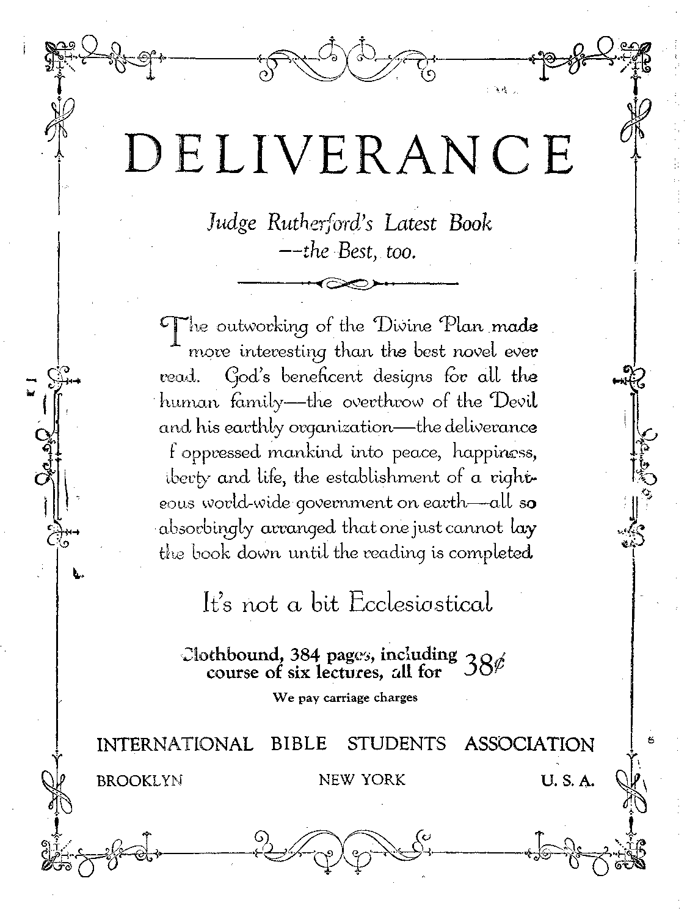

.....-...........—— .. ......— .......-
Social and Educational
What the World is Doing ..........
New York's Rat Problem ............... 803
Nineteen Slave Markets Still Exist ............ 804
Famines in Silesia and Poland ........
Boys and Girls Uncover the Sphinx ........... 808
What the Would Cannot'Do .....
. Political—Domestic and Foreign
Government by Radio . . , . . . . . . . . . . . . . 805
Fascism in Great Britain ............... 805
Syrians Have Lost Confidence in French ......... 806
ABD-EL-KRIM’S OPINION OF EuBOPE ........
India Will Stop Opium Exports .............. 813
Pope Desires Mexican Revolution
Science and Invention
Aurora Borealis Phenomena in Montana ......... 816
The Whole Earth Trembling .........
Home and Health
Travel and Miscellany
Abandoning A Sinking Ship in Mid-Ocean .......... 812
Religion and Philosophy
How Were the Great Limestone Structures Built? ..... 817
Not Such Asses After All . . ....... . ...... .
Bible Questions and Answers ........... .
The Dawn of a New Day ............... 821
Christ Not Welcome in London ............. 830
Studies in “The Harp of God" ............... 818
----______---------______
Published every other Wednesday at 18 Concord Street, Brooklyn, N. Y.. U. S. A., by WOODWORTH, HEDGINGS & MARTIN
Copartners and Proprietors Address; 18 Concord Street, Brooklyn, N. Y., U.S.A. CLAYTON J. WOODWORTH . . . Editor ROBERT J. MARTIN . Business Manager WM, F. HUDGINGS . . Sec’y and Treas.
I Five Cents a Copy—$1.00 a Year Make Remittances to THE GOLDEN AGE
Notice to Subscribers: We do not, as a rule, send a card of acknowledgment for a renewal or for a new subscription. A renewal blank (carrying notice of expiration) will be sent with the journal one month before the subscription expires. Change of address, when requested, may be expected to appear on address label within one month. Foreign Offices ; British . .... 34 Craven Terrace, Lancaster Gate, London W. 2 Canadian ......... 38-40 Irwin Avenue, Toronto, Ontario Australasian ....... 495 Collins Street, Melbourne, Australia South African • ••»•• 6 Lelie Street, Cape Town, South Africa Entered as second-class matter at Brooklyn, N. Y., under the Act of Marsh 3, 1879
Volume VII Brooklyn, N.Y., Wednesday, September 22, 1926 Number 168
IN THE July, 1926, New York Times Current History Magazine, Bishop James Cannon, Jr., for eight years in charge of the Methodist work in Mexico, says:
Whenever and wherever the Vatican has had the power it has permitted no freedom of worship. It did not permit it in Mexico, Cuba, or in South American countries as long as it could prevent it. It endeavors today to stifle all Protestant efforts in Spain, Poland, Italy, llumania and indeed everywhere else.
THE 'Universal Religious Peace Conference announces that at its meeting, to be held at Geneva, Switzerland, in 1930, the Executive Committee will consist of ten Roman Catholics, ten Protestants, five Eastern Orthodox, four Jews, four Buddhists, four Moslems, four Hindus, two Zoroastrians, two Confucians, two Shin-toists, one Jain, one Sikh and one Taoist. There will be no Bible Students on the committee.
BRITAIN is mildly surprised because a judge in New York sees no occasion to condemn an actress for appearing on the stage dressed in a golden fig-leaf five inches big and a thin net brassiere. The same papers carried abroad the news of the seventeen-year-old dancer who, at a theatre party in New York, stepped into a bathtub of champagne, minus even the fig-leaf, and served champagne from the tub to men in the party. Britain may be shocked, but all this is tame in New’ York nowadays.
THE New York American says that fashions are to change; for the French, who have a large trade in silks, velvets and feathers, have found that the women are wearing so little clothing that their trade in these items has been seriously curtailed. But our prophecy is that nothing will ever drive the women back into the long, unhealthy skirts of the past.
K LMOST everybody in America today is buying on installments, which is merely betting against the future. It is estimated that the volume of installment buying in America in 1925 was $6,500,000,000. Most of this was for automobiles. The people are getting the cars and are betting that they will some time be able to pay for them, and pay the interest charges, too.
NEW YORK faces a rat problem of no small dimensions. It is a great task to keep rats out of the most crowded and at the same time the largest city on earth. It is next to impossible to keep from the rats all of the hundreds of cars of food brought into the city daily. As a consequence the rats live and multiply. Rat bites are now becoming increasingly common, so much so that in some districts the mothers cover their sleeping infants with wire netting.
TN THE year 1880 patients in American hospitals for the insane were 82 per 100,000 of the population; by 1910 the number had increased to 204; by 1923 it had reached the height of 242. At present there are 290,456 patients in such institutions. It is claimed that 50 percent of this insanity is unnecessary and preventable..
THE World War cost thirty million lives and four hundred billion dollars in property.
In other words, out of every ten families in the whole earth one was slain by the war. Had there been no war, a fortune of twelve thousand five hundred dollars could have been, divided .among these ten families for the sum that the war cost—all of it wasted, and worse than wasted.
WHAT militarism really means is shewn by dispatches in the Federated Press that several youths called up for military service in Finland committed suicide rather than suffer the tortures which are accorded to conscientious objectors in Finnish prisons.
THE Slavery Commission of the League of
Nations- has performed service to humanity by disclosing that there are nineteen areas in Europe, Asia and Africa in which slave raiding, slave trading and slave markets still exist; also that slavery for debt, slavery by adoption, and forced labor are prevalent or alleged to be prevalent in Porto Rico and the Philippines. The United States is being urged to take part in a Slavery Conference.
IN ALBERTA neighbors turned out to help a widow cultivate and sow her 300 acres of land. The response was so complete that 360 horses were used on the job. The work was done in a day, 41 cultivators and 20 seed drills being employed to do the work.
THE autogyro, of which we have made previous mention, has now been given a thorough test in Britain, and is said to be a complete success. This combination of airplane and windmill enables the flyer to descend vertically, which is the thing for which aviators and inventors have long been waiting and hoping. The windmill part of the device is not connected with the engine.
THE past season has been an unusual one for icebergs. In some instances ships have been completely surrounded with, drift ice and obliged to remain inactive all night. In other instances as many as three bergs have been passed in one day. The “Hamburg” reported an iceberg two thousand feet long, towering 100 feet above the sea. This means that its total height from its base beneath the sea to its peak must have been in the neighborhood of one-fifth of a mile.
T ET the ordinary person, without first recognizing demon worship in some form, undertake to Avalk across red-hot coals; and it requires no argument to prove that horrible if not fatal burns would follow. Returned travelers, who have themselves done these feats after elaborate ceremonials by heathen priests, say that although their clothes were scorched, the bare feet were uninjured. This protection is plainly the work of demons.
Sir Leon Levison, president of the International .. Christian Hebrew Alliance, in. a speech in Toronto, declared that in Hungary there are at least forty thousand Jews who- believe in Christ, in Poland thirty-five thousand; in Austria fifteen thousand; while in Norway, Denmark and Sweden fully four-fifths of the entire Jewish population believe in Him.
THE South of Ireland is awakening. The great system of electrical plants, power for which is to be generated by the waters " of the River Shannon, is in the actual making; and villages which have been asleep for ages are now awakening to find themselves in the center of an intense activity. Hundreds of spotlessly clean huts have been erected for the German and Irish workmen. The series of plants, when completed, will cost $22,000,000. The headquarters are at Limerick.
Electrical Prospecting in Sweden
SINCE the discovery of radio nothing is impossible. Hence it does not surprise us to learn that old methods of prospecting have given way and that two Swedish engineers have developed a method of prospecting for metals by some electrical device. The result is said to be the discovery of large gold deposits near the Arctic Circle, and borings. are said to have confirmed the reputed discoveries. The deposits will be worked at once.
BRITAIN has been experimenting with steel houses, but the results do not justify the costs. Sheet steel Avails cost more than brick, and brick costs more than frame walls. Steel roofs cost thirty percent more than standard wood roofs. As to fires, most fires are of internal origin; and any type of building will be damaged by a hot internal fire. Costs of painting and heating steel structures are excessive. Wooden houses are being re-introduced into England.
THE New York American tells us that houses of straw are now being made in France. The material is .made in panels nine feet long, six feet wide and two inches thick, and is produced under heavy pressure which, so it is claimed, renders the material both sound-proof and fire-proof. It is predicted that the new material will have a wide use.
WHEN a paper-hanger wants to make the paper stick, he makes a paste of flour and water; and that does the trick. That is because the flour is almost pure starch. The way the paste sticks to the wall is the way that white bread sticks to the linings of the intestines. When white bread is chewed and mixed with saliva it makes a fine paste. This form of internal decoration is largely responsible for the fact that humanity now takes 45,000 kinds of drugs in a vain endeavor to keep well.
THINGS seem to be livening- up on the continent of Europe. Paris has found a school for girl pickpockets, ages ten to twelve. Jena, Germany, is in a free-for-all fight on the bobbed hair question, launched by a schoolmaster who was down on bobbed heads. Berlin has a grand dame who celebrated her eighty-second birthday by spending two hours in an airplane, and most of the time drinking. what is all right in Germany but illegal in America. And, finally, Germany is now selling women a combination of twelve chemicals which enables the ladies to make their own perfumes, any combination desired. (P. S.—Some men use the perfumes, too.)
THE radio demonstrated its value in the days of the general strike in England. The government was able to broadcast bulletins as often as it wished, and keep the public posted on the steps that were being taken to maintain order and distribute supplies. Many rumors were effectually killed by this means. Also the radio dealers had a big boom in business.
WRITING of the scene at the end of Britain’s general strike, the Manchester Guardian says:
The interview between Mr. Baldwin and the trade union leaders was impressive. There was on the one sido no humiliating admission of defeat, and on the other nopetty claim of victory. It was recognized that in ending tha general strike before there was any sign of wavering in the ranks of the strikers the congress had, as Mr. Thomas claimed, done a big- thing for the sake of public welfare: and in the response of the head of the government there shone a spirit no less magnanimous.
IT IS characteristic of Britain that out of the strife of the general strike a dictator- has arisen by an apparently evolutionary process. Stanley Baldwin is admittedly today the most powerful man Britain has had in a century, all because he contrived to have the labor'leaders abandon their strike, promise never to employ such methods again, and admit that their action was illegal. The workers, however, gained some important concessions. The end is not yet.
Mb. Stanley Baldwin,Prime Minister of Britain, said recently:
Many forces of good and of evil were- loosed in 1914, forces that were not bound at the time of the Armistice; and there is a strange leaven at work today among all the nations of the world.
Mr. Baldwin is beginning to see some of the signs of the new dispensation, Christ’s kingdom, now being ushered in.
THE British Fascists, with headquarters at' 2 Hatton Garden, London, have for their motto, ‘'King and Country.” Their avowed purposes are hostility to socialism and communism, 'determination that the British Empire shall not 'be thrown to the international wolves, trade ! within the empire, maintenance of the Christian religion, exclusion' of foreign labor, and cooperation between employers and employes.
LOS ANGELES paper calls attention to the fact that there are 5,000 cases of sleeping sickness in Great Britain, with 1,500 deaths from the disease in the past year. Los Angeles itself is credited with having had a very serious smallpox epidemic this past winter; but it was carefully concealed from the public, as it was at its height during the midst of the tourist season, and its publication then would have worked great damage to transportation and other powerful financial interests.
PARIS has a hotel for unmarried working women, which is said to be the cheapest hotel in the world. There are 743 rooms, each with running water; and its rates range from eight to fifteen cents a day. It is equipped to serve 1,500 lunches daily, at. a price of ten cents 'each, or four francs at the current rate of exchange.
IN THE interests of the future race, Berlin has opened a marriage advice bureau where candidates for marriage are examined and furnished medical histories of their parents and grandparents. Those rejected are given good advice, calling on them to abandon the idea of marriage in racial interests. But most of the candidates left the bureau laughing and flourishing certificates. If the bureau is a success others .will be established all over Germany.
ERMANY is building a super-zeppelin which, within about a year, will undertake to travel around the earth, via Spain and Panama, in twenty-two days, without a stop. At present the works at Lake Constance are in danger, owing to the fact that rains have raised the level fifteen feet.
ERMANY has 679,410 persons so badly maimed or diseased by the World War that their earning capacity is less than twenty-five percent of normal, and they are wholly dependent on the government.
THE Manchester Guardian says that "in
Syria people seem to have forgotten that there is such a thing as public security and law and order. Public confidence in the government has almost completely evaporated, considering that the government, after six months, is still unable to police the short line of road and railway connecting Beyrout and Damascus/'’ ; The-article states that the Druses have divided into bands of twenty-five men each and are carrying on a guerilla warfare over the whole territory and even in Damascus itself. All this is a natural consequence of French cruelty and blundering in Syria.
A PLOT to instigate a ritual murder accusation against the Jewish community at Radom, Poland, was discovered when two Christian Poles, caught attempting to leave the body of a dead Christian boy in a Jewish matzoth bakery, rvere arrested by the police. The Jewish population of the city considers it a miracle that the plot was discovered.
DISPATCHES and correspondence from Poland show that there are about 230,000 Jews in Lodz and vicinity who are without employment and without food. In Lower Silesia, Germany, the mining district on the edge of Poland, over twenty percent of the school-children are without suitable clothing and are underfed.
News dispatches of the overthrow of the Polish government by Marshal Pilsudski seem to indicate that he is a truly great man, anxious to free his country of the grafters, religious and political, who have been 'wrecking that country. Two weeks before he seized the government General Pilsudski warned the grafts ers to clean up or he would do just what he did. It takes a vast amount of courage for any man to bare his motives in this manner. Pilsudski is determined that Poland shall be neither a communist state, a monarchy nor a hotbed for scheming priests.
TT WAS not known by historians that Alexander hid any of the fabulous treasures which he obtained in his raids. It was supposed that he sent them all back to Greece. But Soviet scholars have just now discovered a translation of a letter supposed to have been written by Alexander, which describes in full a great store of treasure and where it is hid. The Soviet will search for it.
RUSSIA is being taught American methods, and in the most practical way. In one district in Southeastern Russia is a model American farm of 15,000 acres where the most approved methods of deep plowing, crop rotation, fertilization, conservation of moisture, etc., are practised. The work is done by tractors. The project has the indorsement of some of the leading educators of the United States, including the presidents of Harvard and Leland Stanford Universities.
EFORE the war Russia had 500 tractors, in 1925 it had 12,500, and this number is
expected to be more than doubled during 1926. Russia now has 18,000 public reading rooms equipped with radio receiving apparatus, where concerts and lectures of all sorts are features. Less than 20 percent of its army is now illiterate, as against 90 percent before the war. The circulation of the daily papers has trebled in the past few years. Diplomatic relations have been established with twenty-three governments. The cooperative societies had 22,000,000 members in the spring of 1925. Industrial production is now estimated at 82 percent of what it was before the war. Any citizen may start an enterprise employing not more than twenty persons, but must secure government consent for larger enterprises. .
IN 1913 the membership of the cooperative distributive movement organizations of Russia was 1,800,000; in 1924 this had grown to 8,000,000; in 1925 the total had become over 10,000,000. The Russian cooperative movement is entirely voluntary.
THE New’ York Times contains some details of a great oil find near the mouth of the' Yenisei River in Siberia, almost within the Arctic Circle, which is declared to be of excellent quality and which extends over an area of upward of 200,000 acres. In the same region has been discovered a graphite deposit, estimated at 200,000,000 tons and said to be eighty-five percent pure.
IN THE unfair legislation against the Jews in Russia we see the hand of God turning them back to the soil. No longer able to carry on their old methods of trading, partly because of lack of capital and partly because of restrictive laws, the Jews are being forced back to the soil. About 50,000 are already settled upon farms in Russia, and are doing Well. Immense numbers have gone to Palestine to engage in farm work there.
IT IS said that the public playgrounds in Jerusalem, which are operated on a non-sectarian basis, are accomplishing much good because ' they are bringing together the children of Jews, Christians and Arabs, W’ho thus come to learn better how to deal with one another. The children find the playgrounds a great blessing, as hitherto they were confined to the narrow unventilated streets of the old city.
A LARGE deposit of low grade platinum ores has been discovered in South Africa. The ore body is known to be at least seven hundred feet deep, with an average yield of one ounce of platinum to eight tons of earth. At the present time the'market price for platinum is about $113 an ounce.
THE famous Turk, Zaro Agha, believed to be — the oldest man in the world, has been given a new job. After spending by far the greater part of his one hundred and fifty years in the strenuous life of a porter, the city of Constantinople has now given him a job as doorkeeper for the municipal council.
Alan J. Cobham, one of England’s best known airmen, has returned from his flight to Capetown. The going journey consumed almost three months, although only ninety hours were spent in actual flying. The return trip from the Cape to Cairo was made in nine and one-half days. The contract for air service in South Africa has been let to a German concern.
HE boys and girls of Egypt, 800 of them, working in relays, have for months been busily engaged in uncovering the sphinx, which had become partly buried in the drifting sands of centuries. The base of the sphinx is now uncovered, revealing an image 240 feet long from paws to haunches and sixty-five feet high. The little workers had a singer for each gang, whose only job was to keep up a lively Arabian tune as the boys and girls streamed up and down the high sand banks with their loads.
THE pygmies of the Kalahari desert are said to be only from four to four and one-half feet- tall. They live without houses or huts, and are a vanishing race because their babies do not generally survive the cold weather. The adults themselves are objects of attack on sight by the more powerful representatives of other tribes. It is claimed, however, that the men of this miniature race are probably the fastest runners in the world. Their custom is to capture gazelles by outrunning them. No white man could think of doing this.
Dr. J. C. Mabdrus of Paris, commenting upon the deaths of six prominent Egyptologists closely connected with the discovery of the tomb of Tut-Ankh-amen in the Valley of the Kings, is reported to have said that he was net surprised at these deaths, that the Egyptians were accustomed to practise magic rites; and added, “T. am absolutely convinced that they knew how to concentrate upon and around a mummy certain dynamic powers of which we possess very incomplete notions.” Our explanation of this is that these occult powers for evil are exercised by demons, devils, who infest the atmosphere of the earth.
fpHE Manchester Guardian, writing of rufa life in India, says:
One Indian village is uncommonly like another. It is usually a cluster of small mud huts rising cut of the fields, with no amenities of any sort, often containing not even a single bunnia’s shop. Streets, lighting, sanitation, public buildings, and the like are non-existent. The fields extend to the horizon in an unbroken stretch, with no enclosing hedges or diversity of tilth and pasture. The holdings of individuals, small as they are, are not even consolidated. Morcellement, or fragmentation, has proceeded to an almost incredible extent in India, and the owner or cultivator of a couple of acres may have to work them in half a dozen or more patches in widely separated parts of the village lands. Some fragments are quite literally only a few square yards in area, and are consequently not worth the trouble of cultivating.
HE New York Times tells of the killing of a leopard in India which had roamed 35-0 square miles for the past seven years, and in that time had killed at least 125 human beings. The animal was seven feet ten inches in length, and was shot by an army captain who had been watching for it patiently every night for ten ■ weeks.
THE Chinese, who comprise about 98 percent of the population of the Foreign Settlement of Shanghai, and pay ninety-five percent of the taxes, are getting more and more determined to be ■ treated on an equality with the other powers. * Just now they are demanding a majority representation on the Municipal Council, which at present time is wholly in the - hands of foreigners. The United States government is a part of the government of the Foreign Settlement of Shanghai.
Abd-el-Krim’s Opinion of Europe
THERE are not a few people in the world who will endorse much of what the Riffian commander, Abd-el-Krim, put'forth as his opinion of Europe just prior to the opening of peace discussions with the French and Spanish commanders. Krim and his people would like to be let alone; but alas! they are in a world “where nobody can’t let nobody be”, especially if they have something that is worth stealing. A writer in the New York Times quotes the Riffian leader as follows:
Before 1914 we believed in European civilization almost as in a divinity. We saw the European countries as lands of .law and order, enjoying a liberty and justice, & comfort, a science, which we could only admire. And we, poor little tribes, incapable of keeping peace even among ourselves, felt very puny and feeble beside your great peoples.
Then came the World War; and we saw the nations of Europe plunged in madness, and the wisest and strongest of them employing all their intelligence, all their science, all their industrial capacity to creating greater weapons to destroy more men. We have not known, here in our little Moroccan war, a tenth of the horrors you have experienced in Europe. Think of the atrocities committed in Europe, the rage for destruction, the incessant production of arms ever more powerful and more murderous. Think of the poison gases, the bombardment of undefended towns, the liquid fire. We can no longer respect your civilization as we once did.
It is the possession of a civilization such as that which can entitle one nation to say that, because a neighboring people has not evolved quite as far as it has, it can intervene in its internal affairs and dominate it by force.
We have not invited you into the Riff, neither you French nor the Spaniards. We have been living, badly commanded perhaps, badly directed, badly governed, . but we had the satisfaction of being free. You have drawn up between yourselves treaties dividing up our country, based on the fiction that we were subjects of the Sultan and had only to submit. You thus disposed of us as if we did not exist.
Your treaties remained dead letters for a long time, and then you decided to put them into force—or rather Spain decided to enforce your common decision. In the French zone of Morocco you had been able to impose your will in a general manner without too much resistance, as in harmony with the will of the Sultan. That doesn’t concern us. But when Spain, fortified by your example, sought to impose her laws on us we rebelled and set ourselves against her. We have defended our soil. We have resisted in the name of liberty. Isn’t that our right, even our duty? What did you do in 1914 when your soil was invaded? •
We didn’t seek the war; we didn’t attack. But what difference does the question of responsibility make now that the fire is blazing? Do you not find it strange that the peoples of Europe which are at war with a little people in Morocco could be persuaded that they have been the victims of aggression and that their rights have been invaded? Isn’t this a singular aberration of the sense of right and wrong? We had no choice. We bad to make war to defend our country.
The Diet Maze
IT IS very unsafe for a mere man to publish anything on diet or on the care of the human body. Every time it is done somebody gets very angry; for there is always another way—that which appeals to the one who gets angry. Yet, in spite of it all, we continue to publish occasional articles on these subjects, in the hope that somebody may be benefited by some of the ideas presented. '
But in order to give some idea of the maze into which one gets himself when he begins to dip into this question of diet, we append a clipping from a little publication issued at Papeete, Tahiti, in which a fellow editor unburdens himself as follows:
To these who think that they have already exhausted all the necessary experiments, I recommend a perusal of the following list of diets, each of which I have seen tried, or heard of, at some time or other:
Besides which there are the corrective diets: Salisbury (raw beef), Milk-Dry-diet, Kumiss, the Grape-cure, and I would add what might be called a Natural Diet: eating foods directly from the tree, bush or place where they grow.
808 '
|
FJeteherism (thorough tasting) Un spiced | |
|
Gladstone (long chewing) |
No-breakfast |
|
Eat-only-when-hungry |
No-lunch |
|
1 food a meal |
No-supper |
|
3 foods a meal |
Raw-food |
|
1 food at a time |
Mixed |
|
Restricted (Cornaro) |
Fresh foods |
|
Rotation (French) |
Baked food |
|
Eat-wha t-y ou-like |
Starchless |
|
Eat-when-you-like |
Seasonal |
|
Non-stimulating |
Monodiet |
|
1-meal a day |
Coconut |
|
2 meals a day |
Banana |
|
3, 4, 5 and 6 meals a day |
Peanut |
|
Vegetarianism |
Apple |
|
Lacto-vegetarianism |
Grass |
|
Nut-and-fruit, |
Wheat |
|
Above-ground foods |
Oatmeal (flaked) |
|
Low-proteid |
Temperamental |
|
Regular meals |
Localized |
|
Waterless meals |
Acid-free |
That Papal Splurge at Chicago
THE papal system poured out money like water in the effort to make a tremendous impression upon the American people by the splurge which it made at Chicago last June. There was not a shred of real Christianity connected with any of the idolatrous proceedings in the Windy City, nor on the way there.
The government of the United States for one hundred and fifty years has admitted the soundness of the principle of the separation of church and state. It does not recognize the existence of any papal state, nor the pope at Rome. There is no representative of this government at the Vatican; and there is no provision for receiving the representative of the Vatican here. .
Yet when Cardinal Bonzano, the papal legate, visited New York City, the City Hall and the great Aldermanic Chamber of the City of New York were temporarily converted into a Catholic cathedral; and the chair officially designated for the President of the Board of Aldermen was converted into a temporary papal throne—a disgrace to the city of New Y'ork. '
Cardinal Bonzano could not go to Chicago like any other visitor- to the United States, but went in a.specially built train which is described as the very masterpiece of Pullman work. Painted scarlet without, the train made the run to Chicago with the right of way over every other train on the great New York Central System—a disgrace to the New York Central Railroad.
Not only was the papal train of seven cars specially designed, but the cars were named after popes and cardinals. So elaborate were the preparations for the big splurge that even the dining-car linen and silver bore the papal legate’s coat of arms—a disgrace to the Pullman Company.
At the New York Central station the entrance to what has been described as "the most splendid train that ever left New York” was covered with the American and papal flags, two flags which, in theory at least, stand for exact opposites, liberty and tyranny—a disgrace to the American flag.
At Chicago the usual mummery and idolatry were gone through, a perversion of the true doctrine of salvation through the precious blood of Jesus Christ, the glorification of a piece of bread before which some supposedly great; Americans prostrated themselves, according to the Roman Catholic controlled press; and that is most of it today—a disgrace to them and to the press.
Jezebel has certainly been making most strenuous efforts to doll herself up, and put on the cosmetics with a liberal smear from ear to ear. This is a good sign. It convinces us that the end is not far away; and the nearer it is the better. Papacy is a disgrace to humanity. It has been and is a curse wherever it has a footing.
From the Fellowship Forum we quote some evidence to the point:
“Mexico is emerging from a nightmare from which all Latin American countries have suffered,” declared Senor Don Manuel C. Tellez, Mexican ambassador to the United States, in discussing the Romanist situation in his country and the hectic attempts of Rome’s American hierarchy to besmirch that nation.
“All Latin nations have suffered under the burden of the Roman Catholic church for centuries,” said Senor Tellez. “It has dominated every clement of life, spiritual, economic and political. It has stifled freedom; it has spawned superstition and, in turn, has thrived on the conditions it created.
“All Latin zlmerica must go through the same process. Mexico, fortunately, is a pioneer in the emancipation process. She has thrown off the yoke of bondaga and seeks courageously to develop a national life along liberal lines. She has made, during the few years of her new regime, progress which would make the world marvel, were her quiet progress actively advertised.
“The Roman Catholic church has had its chance. It had a full opportunity to be a leader in the progressive movements of the nation. It had full control of education for centuries. Dense ignorance, with an appalling degree of illiteracy was the result. It had the chance to develop a higher standard of living for the starved peon. It was callous to his needs. Whatever has happened to the Roman Catholic church in Mexico has been its own fault. It lives in the loth century, forgetting that the rest of the world is 500 years past that time. The Roman Catholic church might have been respected and tolerated. in Mexico. It chose to maintain a medieval attitude, and has fallen into disgrace.”*
ardinal Bonzano, the Pope’s legate, has come and gone, and America still survives, is negligible because of the hand of God exhibited at Mundelein. .
The whole show at Chicago last June is said to have cost the Papacy something like $100,000,000. Its effect upon the Roman Catholic causa sto
As has already been mentioned, Cardinal Bonzano entered New York City like a king, occupying the New York City Aldermanic Chamber as a throne room, and marching up Fifth Avenue clothed in scarlet, accompanied by all kinds of Bishops, archbishops, priests, etc., clothed in purple, red, brown and white habiliments, with pages in sky blue, red, yellow and pink, and with many thousands bowing their knees before him as he approached, and kissing his ring.
’ Then Mr. Bonzano went to Chicago in that specially built papal train, the most expensive train ever built in the world, even to specially designed linen and silverware, bearing the cardinal’s coat-of-arms. This train was bright scarlet in color, and the boast is made that it had not only the right of way over every other train on the road, but that never in the history of American railroads has any train received such care from the officials.
Well! At last the cardinal arrived in Chicago, the crime center of America, where they commit an average of two murders a day; and the reports went out that for the time Chicago had become the “Holy City”. Just what we would expect.
The concluding day of the Catholic Congress was to be at Mundelein, forty miles out. They claimed that 225,000 went out by an electric line, consuming nine hours in getting there; 130,000 went by busses and autos; and 73,000 by rail; total attendance, 428,000.
' At two o’clock they began the three mile march around the lake, the crowning feature of which was supposed to be Cardinal Bonzano, carrying a piece of bread which by the repetition of five Latin words he would convert into the actual body of our Lord Jesus Christ. In all honesty it was to be an act of idolatry; no student of the Bible could call it anything else.
The procession started and had gone about a quarter of a mile, with Bonzano walking along under an awning or canopy of white and gold, carrying his little piece of bread, when suddenly there came up one of the fiercest rain and hail storms that ever visited Illinois. The lightning flashed, the rain descended in torrents, and hail fell in such quantities that the trees bent beneath the fury of the gale. The cardinals, archbishops, bishops and priests could not leave their idol; so on they marched, through slush and slimy mud, with the tails of their pretty scarlet frocks over their heads. It is estimated that at least $200,000 worth of priestly vestments were ruined by the storm.
The show was a total failure as a spectacle. The crowd broke for the railroad terminals, and then followed a scene which beggars description ; the trolley system had broken down, and for forty minutes not a car moved. Then the crowd became unmanageable. It surged en masse against the gates, so hard that carpenters had to smash the gates to relieve those crushed against them. Several women had their limbs broken; one had her ribs smashed; hundreds of men as well as women fainted; and women by scores attacked the attendants at the gates. To quiet the crowd some Knights of Columbus sang “Three O’Clock in the Morning”, and other popular songs. During the remainder of the day 1,500 persons were treated at hospitals on the grounds, and 100 were brought to Chicago on a special hospital train.
A reporter of the New York Evening World telegraphed his paper:
There were at least two hundred thousand persons packed like sardines. The clouds had gone and the sun. was flooding the exasperated with a flood of sizzling heat. All this time no trains had arrived. The terminal tracks were empty. None of the employes outside the gates knew what was the matter, or they preferred ignorance. Conditions were actually terrifying.
To us this fizzle of the great show that was expected to win America to Roman Catholicism was the hand of God against an idolatrous system and an idolatrous, sacrilegious practice, that of worshiping a piece of bread under the make-believe that it is the actual body of Christ, and that the priest has the power to crucify Christ afresh by breaking this bread.
The same day that this piece of sacrilegious idolatry was being enacted in Mundelein, Ill., three new cardinals, Messrs. Cerretti, Capotosti and Perosi, kissed the foot of the pope in Rome and received the red hat, which means that they are ready to resist to the point of blood in behalf of the papal system.
Explaining the idolatry at Mundelein, the Cardinal after whom the place is named said:
When a powerful king of old came into his dominions, the heads of all the states and the chiefs of the tribes that owed him allegiance would gather to greet b.ims would come with many retainers and precious gifts to give testimony of their loyalty and allegiance. Today . Christ the King of the world, clothed in the white garb of the Eucharistic species, pays his first ceremonial visit, makes his first triumphant entry into a city of the United States. Until now He has been imprisoned in ' our tabernacles, kept on our altars, closed in our i churches; but now wo bring Him forth, do Him royal honors, bear Him in triumph midst the multitudes, proclaim publicly our loyalty, profess our faith, pour forth our adoration, present our petitions, offer our love.
When the Aquitania brought over the papal legate there were no less than nine altars set up on the big ship, and mass was celebrated from early morn until noon. This was real press agent stuff of which Barnum would have been proud. What church boasts of nine altars?
Abandoning a Sinking Ship in Mid-Ocean By J. B. Sima
1 [This astounding- narrative, written by an
I exclusively and for the first time. The fact
■ minimizes its importance.—Ed.]
rpo BE an eye-witness to the sinking of a ves-J- sei in mid-ocean, with several doomed lives aboard, is a rare, and sad experience, particularly in these post-war days. I have just witnessed such a sight within the past twenty-eight hours, and am penning these lines aboard ship, while the tragedy is gruesomely fresh in my mind.
, The writer is a passenger on the S. S. “Bremen" of the North German Lloyd Line, which sailed from New York on Thursday, January 21,1926, Europe bound. Early yesterday (Tuesday) morning, January 26th, we were awakened by an alarm, signaling the presence of a sinking vessel, which we soon learned had thirty-one men on board.
For thirty-six hours, we were told, the machinery of the doomed vessel had been out of order; the control of the ship had been lost; and it was drifting along through the furiously rough waves in a mid-winter snowstorm. The rear part of the vessel (apparently a British freighter) was already partly under water, and was slowly sinking.
One can imagine the joy of the thirty-one men on the doomed ship when they saw our large passenger liner approaching, presumably in the nick of time to save them. But their hopes were in vain, and their joy short-lived; for most of them were allowed ultimately to descend to a cold and watery grave. However, a life-boat was quickly sent out by our ship upon its arrival, and seven men from the doomed vessel attempted to board it. Six were successful and were brought safely aboard the “Bremen”; but the seventh man was drowned in the transfer. Why other lifeboats were not sent out to rescue
to the tragedy, is here published report is belated by no means
all the others is a mystery to all the passengers who witnessed this tragic scene.
As soon, apparently, as the officers of the “Bremen” saw that the sinking ship was not a German vessel, and learned all about its cargo and crew from the six men who were rescued, they forthwith virtually abandoned the doomed ship with the rest of its crew, although there was plenty of time and opportunity to have saved them all. But word was passed around that the officers of our ship had decided that it was impossible to save the others, and therefore that no attempt would be made.
The apparent lack of concern for imperiled human life by the officers of the “Bremen” was amazing. Yesterday, right while our steamer was still hovering around the sinking ship, and with its doomed crew pathetically begging to be rescued, several of the “Bremen” officers light-heartedly resumed their card-playing in the smoking room, and enjoyed themselves as though nothing unusual were happening, utterly oblivious to the twenty-four human lives that were at stake.
It was heartrending to hear and see the doomed men frantically crying for help as their ship continued to sink slowly during the agonizing hours as we silently stood by. It is of course true that the sea was rough, that there was a snowstorm under way, and that the waves were running high; but something could have been done for these men, or at least some attempt made in their behalf, as was done at the beginning, when the six men were safely transferred to our vessel.
The war has evidently hardened these German officers. They may pretend to forgive sins
the signing of the treaty, but such instances as : these prove that they did not forget. To them, ; .apparently, the war is still under way; and inay-. hap they justified their inaction on “patriotic” : grounds. But to the onlooking passengers their neglect to rescue these doomed men was a criminal, murderous act, perpetrated in a time of peace in a most inhuman and atrocious manner. .
So the poor, doomed sailors of yesterday went down to oblivion with their vessel, while the great North German Lloyd S. S. “Bremen” hovered around them, looking on, for twentyeight long hours, without doing one single thing except to emphasize the tragedy and tantalize the ill-fated crew with its august presence.
But not all German men are thus hardened. Six young, stalwart German sailors from our steamer, let it be said to their everlasting credit, gladly volunteered and actually prepared themselves with life-belts, and requested the privilege of going out with a life-boat and rescue these imperiled men. But no officer would go with them; and the order was that without a commanding officer they must not leave our ship.
Late last night the nose of the sinking vessel and the captain’s, cabin were still out of water, and some of the crew were still alive. But by early this morning (Wednesday) we could see only a few boards floating here and there upon the waves, all the men evidently having perished in the night.
We have continued to hover around the wreck since early yesterday morning, so that it cannot be charged that the S. S. “Bremen” has “abandoned” a sinking vessel. The newspapers will probably report that we “did all that could be done for the perishing”; but as far as activity is concerned we have done nothing. We might have saved this delay of twenty-eight hours by going on our way; but that would have constitute very damaging evidence against the officers of this steamer. As it is, we have “loyally” stood by, and have made certain that the fate of the sunken freighter has been fully sealed before we sailed on.
I talked today with two of the men saved from the sunken vessel, and was told that the cargo consisted principally of. coal, being shipped from Newcastle, England, to New York, for speculative purposes, and was fully insured. They also explained that the captain of this freighter had been drunk for five days; and that although the vessel deteriorated last Saturday night during a heavy storm, the drunken captain refused to send any S. 0. S. call for help until forced to do so by the crew on Sunday night. But this does not minimize the responsibility of the “Bremen” for slacking its duty toward imperiled human lives.
If we could but see the calloused hearts of some to whom we entrust our lives when we travel, as I have just witnessed here in midocean, we might take more pleasure in walking on dry land. This has been my first opportunity. to see, at very close range and on such an important scale, Satan reigning in the hearts of those in responsible positions. How hardly will such men conform to the perfect standard of righteousness during Messiah’s reign! They will be raised to shame and lasting contempt.
As for the twenty-five men who perished yesterday, our hope for them is in the Lord’s resurrection power. How glorious to have such a happy hope, especially in the hour of peril! You can particularly appreciate it in mid-ocean,. as you see the merciless waves snarling and grappling at their victims. Such a hope gives comfort and joy, though all the creeds and, theories of men fail to do so.
India Will Stop Opium Exports
YIELDING to the pressure of public opinion among many civilized countries, but principally as exhibited in the United States, India has finally decided to put a stop to the export of opium, at the rate of ten percent a year, so that in ten years opium production in India will be only for the people of that unhappy land. It is now claimed that four-fifths of all the opium produced comes from China, where it is illegal to produce that drug, but where the production is carried on anyway. China has made many desperate attempts to rid herself of the opium curse which one generation of British statesmen after another has so securely fastened upon her.
Out West By J- A- Bohnet
CONDITIONS throughout what might be called the Colorado longitude of the far western states have materially changed in the past decade. The vast stretches of erstwhile untilled prairie lands have largely given way to tillage. The open expanse of unfenced pasturage, for cattle and sheep, of the past has become well-fenced fields. The large cattle ranches are more or less broken up into farms of from 160 acres to 5000 acres of pasturage and crop growing.
No longer is there seen the dashing cowboy in woolly chaps, high-heeled boots, broad-brimmed hat, seated on a $50 saddle astride of a $20 horse or cayuse, although broad-brimmed hats are still in evidence on the brows of farm and ranch hands who are more ready to do plowing and cultivating than to roam the plains on horseback with a forty-four at ready hand.
The country is dotted with cottages—one cannot designate them houses—of two to four rooms generally. Instead of barns there are several low sheds for sheltering of stock and poultry. The fodder consists chiefly of diminutive cornstalks of two to four feet length, the small end of the ears of which usually touches the ground when the stalk stands in the field, the same length cane or sorghum stalks and other roughage that eastern-bred cattle would turn up their nose at and bawl for something to eat.
The corn yield per acre is from about fifteen to thirty-five bushels as a rule; in rare instances fifty bushels, and is pulled off the low-growing stalk, husk and all, and so fed to the swine.
Threshed wheat is largely dumped in a pile on the bare ground instead of being housed in a bin or a granary; and the hens and turkeys have free access thereto and scratch the pile about all over the ground at will. There, too, the rabbits go to feed when the dog is asleep.
Every land owner or renter has of course an automobile or its “has been”; and often its garage is anywhere beneath the blue sky where all the farm tools are kept. And it is just as well; for there is little or no rust of ironware in this dry climate, where dead bodies do not decompose for many months.
The roads are in good condition for auto 'driving. The air is unexcelled and permeated with invigorating ozone. One feels all the while in first-class fighting trim.
Delightful weather and fine air are the proud
814
assets in this clime. 'Anyone who has lived and breathed in this pure air can never be wholly satisfied to dwell anywhere else. The satisfied feeling one experiences in this region is indescribable. One feels like shouting and singing all the while, especially when the sun is shining, which is very common.
Miles over the vast expanse of slightly undulating country one can see here and there a happy little home, and from one to three miles apart in the ten to twenty mile view, but seemingly not more than one-third the distance.
Objects in this atmosphere are clearly discernable as far as the unaided eye can reach One can see chickens walking about a pines three miles distant. An Easterner would declare that the distance is less than one mile. A horse or a cow can plainly be seen at a five-mile distance without a glass. Most of the time the sky is cloudless.
In some parts the crops are grown by irrigation, and in other places dry-farming is practised. This country's charm is the delightful climate. Nowhere in the United States can the climate of Colorado and vicinity be equaled during eight months in the year. The writer has been in every state in the Union and should know.
But for snow and occasional rain one could sleep steadily in the open and suffer no ill-effect ; and there are no bothersome pests, and no sticky mud. Nowhere is there better drinking water, although in places the wells are from 200 to 400 feet deep.
Much of the land still remains original prairie, and there the jack rabbits, coyotes and magpie thrive abundantly; and in the lower lands the China pheasant has a pleasant home. But one must not overlook the tumble-weed that inhabits the fields of cultivation.
Tumbleweed-bedecked barb-wire fences encircle large fields. There are large herds of cattle grazing on the original prairie land all the year round. Snow does not long remain on the ground.
This article is speaking chiefly, of the portion lying between Nebraska and beyond Cheyenne along the Burlington and Union Pacific routes. The land interior is probably more sparcely settled, and the homes may be less pretentious. Here and there are buffalo wallows, small ponds and irrigating ditches.
In the far distance are snow-crested mountain ranges, saw-toothed against the blue sky. There is no haziness on the horizon. The azure sky contrasts sharply with the emerald green and the semi-arid terrestrial. The autumn days are • perfection. In summer there may be electric storms and hail. Winter wheat is sown as late as the last week in November.
What impresses one the most, perhaps, are the clear atmosphere and the friendliness of the people. Snobbery has no place here. The people as a whole are kind and obliging. There is no passing you by with an automobile when you are wanting assistance or a ride.
Woe betide the fellow that would rob or harm you! He would not get far away; and were he to resent vigorously there might be crepe on the door of his near relative a day later. Wrongful foolishness is not long tolerated here. Perfect honesty is the better policy and gets one the farthest. A bum has usually a hard row to hoe and is not long in finding it out. '
One cannot but admire the spirit of these western people. They live together as brethren and true neighbors. Cooperation is everywhere manifest. ’
You can borrow anything, from a match to a cook-stove, from a clothespin to a sawmill— if they had one. And the people are well up to date on telephones and all other modern conveniences.
Windmills and gas-engine pumps for stock watering are everywhere. Prices are moderate, and the times are generally good. General satisfaction obtains throughout.-
The country school districts are consolidated, and the pupils are hauled to and fro in school auto-bus arrangement. The school houses are large and of brick construction. The children are not restricted in the taking of playthings to the schoolyard.
In many of the eastern districts the children are prohibited from even playing tag upon the schoolhouse playing ground. Then what is the play ground for? These western people have some sense, and their children grow up the hardier for it. •
These children are not “mamma’s frail, delicate houseplant”. They are the children that’ make real men and women, the brawn and bulwark of our nation; and in the making they are not “too good to play with the children og THE NEIGHBORS”. .
Pope Desires Mexican Revolution
“TT IS HOLINESS” has let it be known that
-L-L he would not be averse to seeing the saints in Mexico begin their one-time occupation of shooting each other up. It came about in this wise: The pope’s representative, Bishop Caruana, was chased out of the country for saying when he applied for admission to Mexico that he came there purely as a visitor, whereas the pope himself states that Caruana was there as his representative; and for saying that he spoke only English, wherein he seemed to forget for the moment that he was an Italian by birth and had lived for a generation in a Spanishspeaking country; and, finally, for saying that he was'- a Protestant, which is not seemly for a good pious archbishop of the Roman.Catholic Church to say.
Well! The pope seemed to feel that he was out of luck when the Mexicans gave Caruana the gate, and so he has invited us all to pray for Mexico. Incidentally, he gives us a hint that' Mexico will need our prayers; for if he can bring it around in a nice pious saintly apostolic way he intends to have another revolution there. According to the Chicago Daily News this is what he said on the subject on July 6th, to the Latin-American College at Rome:
There is no need to lose hope, because the history of the church teaches that when things reach an extremity then revolutions are possible, according to the wish of God. '
We are not sure whether the “god” here referred to is the pope or the Devil, or whether both are meant. The latter suggestion seems like a good one, because it is certain that the Almighty is not involved in any way, and both the pope and the Devil are gods, mighty ones, within the Scriptural meaning of those terms.
What Mexico is Doing By Aituro M. Elias, Mexican Consul General
A GREAT irrigation project involving $30,000,000 of expenditure has begun. This is vital to the agriculture development of Mexico. One-half of the work has been taken ' over by one of the largest engineering firms in the United States and the other half by the largest engineering firm in Germany. Road building on a large scale has been begun in ' order to increase the transportation facilities between country and cities. A National Bank of Issue -with an authorized capital of $50,000,000, of which $30,000,000 have already been paid in, has been in operation nearly a year, is in a flourishing condition, and has proved of great service in the work begun of building up the material condition of the Mexican people.
The new Agriculture Bank with an authorized capital of $20,000,000 and $9,000,000 paid in has already begun to be of service to the Mexican farmers. Loans are made on growing crops and for the purchase of modern agricultural machinery of which the farmers are much in need. Only this winter as Financial Agent of the Mexican Government I purchased and shipped the first installment of plows. These 10,000 plows bought in the United States together with harness were sold to the farmers for $28, to be paid for in three years without interest. When it is remembered that formerly this outfit cost the farmer $112 and that he had to pay cash, which in most cases he did not have, resulting in his being compelled to pursue the most primitive methods with corresponding small production, the importance of this move, which will be extended throughout the country, will be understood.
In conclusion the great importance to the people of the United States of a peaceful constructive Mexico engaged in constantly improving the conditions of its people can be proved by the increase of business with this great nation as shown by the great increase of the amount of merchandise which went into Mexico during the first five months of 1926 compared with what went in during the corresponding five months of 1924, when Mexico was in the throes of the De la Huerta Rebellion.
Mexico, with the greatest amount of potential wealth of any country of similar size in the world, has just begun to really develop. What Mexico wants above everything else is peace. It wants nothing of any other country but amity. It turns its eyes toward the whole world with no envy nor greed in them for the possessions of other. And it asks all the other nations of the world to look upon Mexico in the same manner. With this world attitude existing toward us, our people will work out their own salvation; and a great nation of prosperous and therefore happy people will take the place of one which has for centuries borne the cruel burdens put upon them by greedy exploiters, both native and foreign.
Aurora Borealis Phenomena in Montana
DISPLAYS of Aurora Borealis are always magnificent in northern latitudes. They have been especially brilliant in Montana this past season, and have been of a nature never before recorded in that region. We give a few newspaper notices of how the phenomena appeared in various cities.
As seen in Butte:
The long streamer presented an undulating line of white against the blue-black sky—as if some giant gray charger of the heavens had been deprived of his flowing tail, a tail that now floated aimlessly across the sky.
Shortly after 9 o’clock the long white streak, which had become attenuated and elongated, took on the appearance of a serpent, and then it broke in two and the divided parts drifted out of alignment; but the eastern end, much the denser of the two, floated in the sky like the white plumes that decorate a hearse. The peculiar wavering band across the sky aroused intense curiosity.
As seen in Bozeman the phenomenon
had the shape of a night rainbow without the colorful effects. Before this, the northern lights were plainly visible; and after they died down, the illuminated cloud effect grew stronger. At times it was like the beam from a gigantic searchlight. Later it resembled a shepherd’s crook, and still again the perfect half of a circle from horizon to horizon. As the shaft slowly dissipated the northern lights again became visible.
As seen at Livingston:
The display had the appearance of a huge band or mist glowing with a green bow of phosphorescent light. It extended from northwest to southwest entirely across the sky at the zenith. The phenomenon lasted about half an hour, drifting slowly westward as though borne by a slight breeze.
816
What The W or Id Cannot Do
A RECENT issue of the New York Evening
World accused the International Bible Students’ metropolitan radio station WB B R of bigotry of utterance. The World editor has been advised by the Bible Students that his accusation against them is wrong.
A bigot is a blind zealot who refuses to be enlightened by the truth. The reason The World does not like the programs from WBBR is that it does not like the truth.
The World was informed that it is the purpose of WBBR. to continue to broadcast the unadulterated Bible truth, that that station does not have to answer to The World as to what it says, and that it is none of The World’s business. It is good for -The World to know this.
Let all understand the issue dearly. The editor of The World and every other intelligent man on The World—or in the world, for that matter—understands, or. could understand i£ he would, that the whole purgatory and eternal torture scheme is a falsehood from beginning to end. It is merely a cloak for the covering of hypocrisy and for the wheedling of money out of the poor, so that an army of parasites can be supported.
The World has found an organization that cannot be bluffed, that is not afraid of anything it may publish, or of any crooked political methods invoked to silence its voice.
How Were the Great Limestone Structures Built?
THE article which appeared in the Golden Age of April 7th, 1926, is so far from being reliable in its technical suggestions, its practical possibilities, and its agreement with the Scriptures, that perhaps I may be forgiven for questioning some of the points mentioned therein.
Firstly the Scriptural aspect: The head corner stone of the Great Pyramid is used as an illustration of our Lord, and as such is perfect and complete from the beginning, and forms the pattern to which all the rest of the pyramid must conform. It is in fact a block of very hard limestone, which is another name for calciumcarbonate or marble, white marble in this case. This stone was rejected at first by the builders as being useless, owing to its shape. (Psalm 118: 22) One cannot reject a wet mass of concrete cast in situ on top of a building which has not yet been built.
Then we know that the pyramid is a symbol of the earth (Isaiah 19:19), and consequently should abide for ever. (Ecclesiastes 1:4) Marble would conform to this requirement, but 1 to 6 or 1 to 9 concrete would disintegrate in less than one hundred years. Some London foundations, 1 to 8 concrete, have been known to entirely vanish in about forty years; and London, like the pyramid, is surrounded with clay and sand.
The pyramid stands upon native rock with four corner socket stones perfectly fitted into
By William T. Drew (England)
that rock- (Job 38:6, margin), and has not moved since it was built about 2170 B. C.
As to the great images and other sculptures in various parts of the earth, these have been proved to be the shrines of various gods which were worshipped in the days when the earth was full of violence, just prior to the Deluge (Genesis 6: 4,11,12) and were undoubtedly the work of the hybrid semi-human beings referred to in this scripture and recorded on the Abydos Tablet in the Cairo Museum,
Now to take a few technical points: It is common knowledge in the building trade all over the globe that to trowel up the face of concrete or cement compo, as suggested in the article, will destroy the durability of the composition ; and for this reason there is usually a clause included in specifications to the effect that this must not be done.
Furthermore, the use of cramps and folding wedges upon such a huge bulk of green concrete, with the removal of the shuttering the next day, as suggested, is so impracticable that it would not be considered for a moment by any responsible builder, even in these times of rush and inefficiency.
Then again, the joints in the pyramid are true; and had the builders used poured concrete this 'would not have been so, partly because it is impossible to exclude all air bubbles and also because wood shuttering always warps, and cast iron shutters are never true. Moreover, it is
817 • .
'doubtful if these were known in those days.
The .fineness of the joints is merely a matter of the stone mason’s art; for instance, the fine joint achieved even, in our day in the marble work in such buildings as St. Paul’s Cathedral, St. Peter’s in Rome, or the Alcazar Palace in Spain. One cannot insert a thin knife into the joints of the marble in these structures, because marble does not perish like artificial stone, and the joints were good when made.
The matter of erection is easy, particularly in the case of a pyramid; for here the force of gravity would haul up the blocks, needing only two pulley blocks and a strong- cable made of human hair. These are implements which were actually in use at the time and in that land. There are ancient drawings in the British
Brooklyn, N.Y. N, N. Y,
Museum, showing this method in operation for a similar purpose.
■ The proof that the stones were not taken up inside the structure lies in the fact that the granite slabs dose the top of the King’s Chamber, which is the highest point inside the edifice; and, if this is considered for a moment, it will be seen that it is impossible for material to be taken up inside on trucks, as suggested, to any point above this height.
In the light of these few facts, therefore, I suggest that an account such as this, based upon surmise only, tends to belittle the wonder and beauty of Jehovah’s works, particularly as it might be and has been taken as reliable information by some readers of The Golden Age since it was published.
Not Such Asses After All
A PHILADELPHIA clergyman, in a Sunday night sermon,, allowed himself to make the 1 indiscreet remark that, “business men of this | country, amazingly .wise, by day, are amazing . asses by night”. This remark came to the attention of the president of a Philadelphia concern ‘ that has sales agencies in every corner of. the i globe; and in his house organ, entitled “The Hougldon Line”, he comes back at the dominie as follows: . '
I have nothing in common with those who are harping on the theory that there is something the matter with religion. My claim is that religion is. all right and just as salable a product as ever, but it cannot be sold by antiquated methods, or by inferior salesmanship.
The church, of course, is the organization through which religion must be sold. but the church must modernize its sales methods. In. other words, this business man—meaning myself—who is so marvelously wise by day and so asinine by night, writing this article by day, gives as his opinion that there is nothing the matter with religion, but there is everything the matter with the modern religious sales force, at least with the ProteSt.nt end; and as a ProteSt.nt, that is the end in Which I am the most interested.
There is nothing in commerce which can compete with a superior sales organization, excepting another superior sales organization. And we find in business, that those houses are the. most successful which preserve «dignified attitude and refuse to be drawn into daptrap, sensational sales methods.
In religion we find the dignified Roman Catholic Church going right on with its wonderful and almost Supernatural organization and unquestionably selling the most goods, but the sales are not sufficient to satisfy the needs of advanced civilization.
But when we come to the ProteSt.nt Church we find it divided within itself, and each handing out a different line of chatter concerning its goods, and dominies knocking everybody and everything but themselves for their failure.
The ProteSt.nt Church has even gone so far as to resort to bargain sale methods, by bringing in the Rev.' “Billy” Sunday, the all-around champion clown of the religious sales force of America- and the man who has done real religion more harm than any other individual of any time, and I don't except the veriest atheists.
Modern business no .longer consists of selling umbrellas to the Arabs of the Sahara Desert and artificial refrigerating machines to the inhabitants of the Arctic .. regions. It means rendering real service with each sale and making no sale unless such service is rendered.
“Billy” Sunday and his like induce folks to hit the sawdust trail, and the permanency of such religion is equal to the permanency of sawdust. Who ever heard of building a real lasting trail, or highway, of sawdust?
The only place where sawdust serves as a useful pavement is the circus. That’s why Sunday uses it.
Those who claim to know say that the business man is •no longer a factor in the church. I admit it and that is because the “Kirk’s” don’t underSt.nd the business man : and don’t know how to sell him religion.
Vou cannot attract the business man to the church by holding him up to ridicule and calling him an ass . by night. And as I underSt.nd that the Rev. Dr. Kirk made his allusion to the business man at a night sermon, might I volunteer the opinion that no business man has ever made such an ass cf himself at night as this very same Dr. Kirk?
Bible Questions and Answers A,
[Radiocast from Watchtower WBBK on a wave length of 416.4 meters by Judge Rutherford.!
Question : If one is a Christian in dire poverty, and sins, what is his responsibility to God?
Answer : The Christian who sins should go to the heavenly Father in prayer and ask forgiveness through Christ Jesus, In John 2:1,2 we read, “If any man sin, we have an advocate with the Father, Jesus Christ the righteous: and he is the propitiation for our sins: and not for ours only, but also for the sins of the whole world/’ Whether the man is in poverty or not, the Bible does not say that the payment of money is necessary to forgive sins; such a course is indeed an abomination to the Lord. God does not need the money of anyone; but everyone is dependent upon God. In 1 John 1:9 we read, “If we confess our sins [unto God] he is faithful and just to forgive us our sins, and to cleanse us from all unrighteousness.” In Psalm 86: 5 we read, “For thou, Lord [Jehovah], art good, and ready to forgive; and plenteous in mercy unto all them that call upon thee.” The wise course is to follow the Scriptures and go to God in prayer and ask forgiveness; and God through Christ Jesus will forgive our sins.
Question: Why is there no reference to the books of the Maccabees in the Bible?
Answer : It is believed that these do not contain the inspired words of the Lord, and were not recognized by the Jews as a part of the holy Scriptures. The two books of the Maccabees are historical, and the first relates largely to the Gentiles. The question may also be asked, “Why not include the historical works of Josephus in the Bible?” Josephus was a historian but not a prophet of God. If the books of the Maccabees were not in the original inspired words of God, no subsequent action on the part of man or a group of men, in councils, could make them a part of God’s Word.
Question : Please explain Revelation 20:15, “And whosoever was not found written in the book of life was cast into the lake of fire.”
Answer: This scripture means that whoever will not be given everlasting life will be destroyed. The lake of fire is a symbol of destruction. In support of this the harmonious testimony of the Bible comes to our attention. In Psalm 145:20 we read, “All the.wicked will he [God] destroy.” In Psalm 37: 38 we read, “The transgressors shall be destroyed together: the end of the wicked shall be cut off.” In Ezekiel 18:20 we read, “The soul that sinneth it shall die.” Jesus said, as is recorded in Matthew i 10: 28, “Reverence him [God] who is able to de- ' stroy both body and soul in gehenna.” In Psalm 37:10 we read, “Yet a little while, and th e wicked shall not be; yea, thou shalt diligently consider his place and it shall not be.” Let it be remembered that the gift to the obedient is everlasting life ; the end of the wicked is everlasting DESTRUCTION, OB DEATH WITHOUT RECOVERY.
Question : Did not God create man in the end of the sixth creative day or period of creation, and is not the seventh day during which H® rests a period of seven thousand years ?
Ansiver: Yes, that is the correct thought. If was toward the very end of the sixth day of creation that Adam and his wife were created. In Genesis 1:27 we read, “'So God created man in his own image, in the image of God created he him; male and female created he them.” In the 31st verse of the first chapter of Genesis we read, “And God saw everything that he had made, and, behold, it was very good. And the evening and the morning were the sixth day.” God has entrusted to His Son the work of bringing the earth and man to perfection. This period of Jehovah’s rest began over six thousand years ago; it continued during St. Paul’s day, as shown by the St.tements of the apostle himself, and will continue to the end of Christ’s thousand-year reign. The rest day of Jehovah God is therefore a period 7000 years in duration.
Question: Please explain 1 Corinthians 15: 51-55, “Behold I show you a mystery; We shall not all sleep, but wye shall all be changed, in a moment, in the twinkling of an eye, at the last trump: for the trumpet shall sound, and the dead shall be raised incorruptible, and we shall be changed. For this corruptible must put on incorruption, and this mortal must put on immortality. So when this corruptible shall havs put on incorruption, and this mortal shall have put on immortality, then shall be brought to pass the saying that is written, Death is swallowed up in victory. O death, where is thy sting* O grave, where is thy victory?”
Answer : Since a detailed explanation of ll’is
passage would take much time, a few St.temerits may be made so that the reader may continue the study. The Scriptures say, “We shall not all sleep.” The faithful Christians, including the apostles and early disciples, remained asleep in death until the resurrection time, when the .Xord Jesus awakened them from the tomb. But ! the apostle St.tes that not all would sleep, meaning that after the resurection had begun, from that time forth, when a faithful Christian dies : he would not . remain in death as did the early folio,wers who died, but such an one would be changed immediately and caught up in the air with the Lord. .
Of course all are changed; both those who are awakened from the tombs and the faithful Christians who now die and are inSt.ntly changed, have a different organism than they had while here on earth. All faithful Christians are granted powerful spiritual bodies in the resurrection. After the resurrection of the faithful Christians, death has forever ceased to have a hold upon. them. In Revelation 20:6 we read, “Blessed and holy is he that hath part in the first resurrection: on such the second death hath no power, but they shall be priests of God and of Christ, and shall reign with him a thousand years.” We believe that the first resurrection has begun, and that the faithful Christian now dying does not remain dead as did the early disciple until the awakening process, but is now caught up in the air with his Lord.
Question: Was the strike in England last spring a forerunner of more serious trouble on earth, and are we to expect more serious trouble such as revolutions, etc., according to the Bible ?
Answer: Yes. We are living in the last days of the old world, the last days of society as organized into nations under the invisible control of Satan. The peoples of earth, will soon gain freedom, after the time of intense trouble is over. The break-up of the nations will give place to the eSt.blishment of God’s kingdom on earth under the reign of Christ Jesus. In Daniel 2:44 we read, “In the days of these kings shall the God of heaven set up a kingdom, which shall never be destroyed: ... it shall break in pieces and consume all these kingdoms, and it shall St.nd for ever.” In Zephaniah 3: 8, 9 we read, “Therefore wait ye upon me, saith the
Lord, until the day that I rise up to the prey; for my determination is to gather the nations, that I may assemble the kingdoms, to pour upon them mine indignation, even all my fierce anger: for all the earth [organized society in the form of nations] shall be devoured by the fire of my jealousy. For then will I turn to the people a pure message, that they may all call upon the name of the Lord, to serve him with one consent.”
Question : When Jesus comes the second time does He pass judgment upon the dead Christian a second time? ;
Answer: No. Each Christian is placed on trial once, and but one final judgment is rendered; and that final judgment is rendered at the time he finishes his course. It is true, however, that Jesus comes.to judge the quick and the dead. At His second advent there would be some people alive on earth, and He would also have the privilege of judging the billions of heathen who will be called forth from the graves and placed on trial.
Question: Where do we reckon that the soul of the Christian is, between the time of death and the time of resurrection?
Answer: A Christian soul between death and resurrection is dead, according to the Scriptures. If* there was no resurrection from the dead, then the Christian who dies has perished and would be forever annihilated. The Scriptures are very plain about this matter. In 1 Corinthians 15:13,18 we read, “If there be no resurrection of the dead, then is Christ not risen. . . . Then they also which are fallen asleep in Christ are perished.” The St.te of the dead, which applies to the Christian as- well as to others, is mentioned in Ecclesiastics 9:10: “Whatsoever thy hand findeth to do, do it with thy might; for there is no work, nor device, nor knowledge, nor wisdom, in the grave, whither thou goest.” Even Jesus as a soul died, and was raised out of death by the mighty power of God His Father. In Isaiah 53:12 we read concerning Jesus, “'He hath poured out his soul unto death: and he was numbered with the transgressors; and he bare the sin of many.” After His resurrection Christ Jesus could say, as St.ted in Revelation 1:17 and 18, “I am the first and the last: I am he that liveth, and was dead; and behold, I am alive for evermore.” '
Radio Broadcast
OUE special correspondent from Spain reports concerning Judge Rutherford’s lectures by radio in Madrid and Barcelona, as - follows:
The radio St.tion IBERICA, Madrid/on the seventh of June .broadcast Judge Rutherford’s lecture, “The Dawn of a New Day”; and on June tenth radio St.tion CAT ALAN A, Barcelona, broadcast Judge Rutherford’s lecture, “The World’s Deliverer.” These lectures were interpreted in perfect Castilian and were heard throughout Spain, the Balearic and Canary Islands, and North Africa, as well as throughout other parts of Europe. The operators of the radio St.tions estimated the audience from live hundred thousand to eight hundred thousand of Spanish-speaking people.
This is the first time the gospel message of the kingdom has been given by radio in the nation of Spain. Wide announcement had been made . of the lectures through the newspapers, as well as by radio. The announcers of the St.tions announced the lectures in fiva languages, namely : Spanish, French, Italian, English and German. In his announcement the announcer said in subSt.nce that the lecture, “The World’s Deliverer,” would be given by the eminent American judge, author and philanthropist, J. F. Rutherford, of New York City; and that it would be preceded by a half hour musical concert, and that at the conclusion of the lecture the remainder of the concert would be. given. Thus the lectures were given special prominence.
The leading newspapers in Spain also carried the announcement. Already splendid reports are being received, and many requests for the lectures in printed form, and other literature.
For the benefit of our readers The Golden Age publishes on the following pages both of these lectures, just as they were given by Judge Rutherford from the radio St.tions in Spain.
The Dawn of a New Day
[Radiocast by Judge Rutherford from Madrid, Spain, June 7, 1926, from St.tion IBERICA.]
ST. PETER, being on earth in a time of darkness, and writing for the encouragement of other saints, said: “And we have the prophetic word more confirmed, to which you do well, taking heed, (as to a lamp shining in a dark place, till the day dawn, and the Light-bringer may arise), in your hearts.”—2 Peter 1:19, Diaglott.
He was here pointing them to the time when the great Light-bearer, Christ Jesus, should return and make glad their hearts. Since then all faithful Christians have been looking for the dawn of the New Day. .
Dawn means the time of light. Dawn means to begin to grow light in the morning. When the first gray streaks spread their arms over the eastern horizon we say: The day is dawning.
With reference to time, it means a period or duration of time. It may be long, or it may be short. When thus used, it does not necessarily mean the time of light but merely a St.ted period of time. For inSt.nce, we read concerning the day of Noah (Matthew 24: 37), and the day of Abraham.—John 8: 56.
As to the divisions of time by Jehovah, we I'ead that “one day is with the Lord as a thousand years, and a thousand years as one day”. (2 Peter 3: 8) The dawn of a new day, as used in this lecture, means a period of time when the light of a new and better condition will begia to break upon mankind.
The period of time from Eden to the second coming of the Lord is a time of night, which means a time of darkness. In that period of time sin, sickness and death have persisted and prevailed. During that period of time Satan has been the god or invisible ruler of the world. 11^ is the very personification of wickedness and darkness. He has blinded the minds of the people lest the glorious light of the truthehould shim unto their minds and they might know God’s great plan of salvation. (2 Corinthians 4:3,4) Jehovah has not interfered witheatan’s nefarious work because it is not His due time. Buf during all that period of darkness the Lord had had some witnesses on the earth who havfc studied His .Word, which has furnished them light and guidance. Concerning this the prophet says ■ “Thy word is a lamp unto my feet, and a light unto my path." (Psalm 119:105) Those who have disregarded the Holy Scriptures, the ..Word of God, have walked on in darkness.
When Jesus was on earth He said: “I am the light of the world; he that followeth me shall not walk in darkness, but shall have the light of life” (John 8:12); "As long as I am in the world, I am the light of the world.” (John 9:5) Shortly before His departure from the earth Jesus said: "Yet a little while is the light with you.” (John 12: 35) He then said to His faithful followers: "Ye are the light of the world.” (Matthew 5:14) Down through the age the true and faithful Christians have been the light of the world in this, that they have reflected the light of the Lord. Their light has been the spirit and the word of the Lord.
am
'To these faithful ones the Lord committed the interests of His kingdom on earth; and to that end they have been watchmen on duty, watching the development of His great plan, and according to His will testifying to others concerning the same.
The prophet of God' pictures one coming to the faithful Christians on guard at the end of the Gospel Age and saying, “Watchman, what of the night?” And the watchman answers: “The morning cometh, and also the night.” —Isaiah 21:11,12.
This prophecy shows that the following things are to be expected, viz.: (1) Some who would be watching for a new day; (2) the coming or dawning of that day; and (3) with its coining there would be more trouble upon the earth, just before the full light. The answer that the watchman gives is that the morning is come and still it is night; that is to say, more trouble and sorrow, even in an increased manner, before the fulness of light shall shine upon the peoples of the earth. Even so it has been.
Just before Jesus was crucified He said to His disciples: “I go to prepare a place for you. And if I go and prepare a place for you, I will come again, and receive you unto myself.” '—John 14: 2, 3. .
The return of the Lord has been the greatest event to which Christians have looked forward. They have watched for the evidence of His return for many centuries. Those who really desire His return, and who carefully study and observe the prophecies thereto, are designated as watchmen. These watchmen are put on guard as witnesses, to give the alarm in the Lord’s due time.
Since Jesus Christ was the light of the world at the time of His first advent, and His representatives on eartheince have reflected His light, we may be sure that greater light and truth, would accompany His return or second coming. The Apostle Paul, writing under inspiration of the holy spirit, said that with the second coming of The Lord would come greater light.—1 Corinthians 4:5.
According to prophecy and Scriptural chronology, the time of our Lord’s second presence is now. Of course His presence is invisible to man. I have not time now to discuss the evidence, of the Lord’s second presence. I now merely make the St.tement that the second presence of the Lord, invisible to man, began to be made manifest in. 1874 and has been particularly true since 1914; and if that be true we should expect that greater light would begin to dawn, especially for the benefit of those who have been and are watchmen. The physical facts show that this is true, that the faithful Christians during the past few years have had a wonderful increase of light upon the Scriptures. And the world also has benefited from the light of the Lord’s presence. .
It is interesting to note that from time immemorial men who perform any day-labor have been downtrodden and oppressed by the property owner and the wealthy. But it is of interest to note that it was in 1874 that thefirst organization was perfected looking to the betterment of the laboring man. And why was this ? I answer: Because men about that time began to get greater light as to the rights of the men who produced the wealth of the earth. It was after that date that all the great modern inventions were brought to light. Fifty years ago the automobile was unknown, and today ' they are in use everywhere. Fifty years ago the man who would have suggested flying through the air would have been considered feeble-minded. During the past fifty years we have had great inventions too numerous here to mention, which have revolutionized the world. It has been less than seven years since the radio became a tiling that could be generally used, and now it is possible to talk around the earth.
These things have not come about because of greater mental capacity of man; but they have come because it is God’s due time, because the Lord is present, and because we are in the dawn of a new day.
God promised that those who walk before Him humbly and faithfully should have greater light. And this is clearly in fulfilment of the scripture which reads: fBut the path of the just is as the shining light, that shineth more and more unto the perfect day.” —Prov. 4:18.
Let the emphasis be put upon the word “just”, as St.ted in this scripture. There are none just except those who have made a consecration to the Lord, and have been justified by Jehovah through the precious blood of Christ Jesus. (Romans 5:1, 9; 8: 30) Of course those who claim to be students of the Divine Word, but who have repudiated the blood of Christ, could not be justified, nor could they have increased light. What little light they may have had has become darkness.
What do the facts show ? It has been announced by the press that a majority of the clergymen are now Modernists. Modernists are wise men, as the world speaks of wisdom; but their wisdom in God’s sight is foolishness. The Modernists deny the blood of Christ as the great redemptive price of mankind; and they likewise deny the day of the Lord, the Millennial reign of Christ, for the blessing of mankind. Therefore we see, as the prophet said: ‘‘The morning cometh, and also the night.” Those who are justified because of faith in the merit of Christ have been blessed by increased light upon His Word and plan. Those who have repudiated the blood of Christ have been steeped in darkness and have walked on in darkness.
During the past fifty years there have been more wars than in any other like period. There have been more strikes, revolutions and trouble along every line. These things are in exact harmony with the words of the prophet, that more trouble would come with the dawn of a new day, because Satan is resisting the light desperately, trying to keep the people in darkness.
What, then, is the new day that is dawning! I answer: It is the thousand-year day, during which period of time the Lord of righteousness eSt.blishes the new invisible ruling power, the new heavens, and organizes the visible government on earth in righteousness. It is that blessed day for which Jesus taught His followers to pray: “Thy kingdom come. Thy will be done in earth, as it is in heaven.” This great prayer is certain to be answered. Its fulfilment and realization is beginning to be experienced. We should therefore expect that during the thousand-year day the will of God will be done on earth even as it is now done in heaven.
IT IS the will of God that all men shall ba J- brought to a knowledge of the truth. (1 Timothy 2:3,4) This will be done in His own due time. Truth and light are synonymous, and the truth in its fulness can come to the people only during the new day.
After the gathering out from the world of those who shall be with Christ in His heavenly kingdom, then all Israel shall be saved. Such is the will of God as expressed in his Word. St. Paul declares that this shall begin when the “fulness of the Gentiles be come in”. “There shall come out of Sion the Deliver, and shall turn away ungodliness from Jacob.”—Romans 11:25, 26.
The Lord Jesus declared that with the dawn, of the new day God’s favor should begin to return to Israel. As this new day dawns, we see the fulfilment of this promise toward those who have faith in the promise made to Abraham.
This has been a wonderful year in the shedding of more light upon God’s plan and in illuminating the minds of the people. Early in the spring of 1925 the Jews took out of the New York harbor a Jewish vessel, flying the Jewish flag, and bound for the promised land of Palestine. The hearts of the Jews are turning toward their homeland. And why?
At Mount Sinai God made a covenant with the nation of Israel, which covenant would have provided that nation with life and all blessings incident thereto, had the people been able to keep it. They failed, and that covenant brought them few blessings, and they were cast away. But it is the will of God that another covenant shall be made with Israel, and this will constitute partly the doing of His will on earth. Concerning this St. Paul, quoting from the prophet, wrote: “Behold the days come, saith the Lord, when I will make a new covenant with the house of Israel and with the house of Judah: not according to the covenant that I made with their fathers in the day when I took them by the hand to lead them out of the land of Egypt; because they continued not in my covenant, and I regarded them not, saith the Lord. For this is the covenant that I will make with the house of Israel after those days, saith the Lord; I will put my laws into their mind, and write them in their hearts, and I will be to them a God, and they shall be to me a people.” •—Hebrews 8: 8-10.
It is the will of God that all men shall have . the benefit of the new covenant. This new covenant will be made with Christ on one side as . the representative of Israel and, through them, ' of all mankind; and with God on the other side. * All the people shall be brought to a knowledge of the truth, and all -who will accept and obey the terms of the new covenant will receive the lasting blessings that it promises. This will be one of the great things of the new day that is dawning.
Through His prophet Zechariah Jehovah gives a beautiful picture of His arrangement for the blessing of the people during that new day. Before reading this scripture I will explain the symbolic meaning of the principal words therein contained.
Jehovah’s feet, St.nding upon the Mount of Olives, pictures the divine authority, God’s will being done on earth even as it is done in heaven. Mountain is a symbol of a kingdom, and is here used to symbolize God’s kingdom. The olive is a symbol of light, peace and blessing. The Mount of Olives, therefore, pictures God’s kingdom of light, peace and blessings for mankind. The half of the mountain St.nding on the side of the north pictures the invisible, or heavenly phase of God’s kingdom; the other half, St.nding on the south, pictures the visible, or earthly phase of God’s kingdom, ministered through the ancient worthies, the princes who will then be in the earth. The dividing of the mountain thus forms a valley between; and this valley represents the condition of blessings, whereby the people will receive the blessings through the terms of the new covenant. As the valley is pictured as extending from the east to the -west, the sun will shine through it during the entire day.
The Lord Jesus Christ is pictured as the Sun of Righteousness; and the Prophet Malachi says: “The Sun of righteousness shall arise with healing in his -wings; and ye shall go forth, and grow up as calves of the St.ll.” —Mal. 4: 2.
A St.ll-fed calf develops into a fine, fat, sleek bullock, the picture of a perfect man. Now.with this explanation of the symbols, let us note the scripture:
“And his feet shall St.nd in that day upon the mount of Olives, which is before Jerusalem on the east; and the mount of Olives shall cleave in the midst thereof toward the east and toward the west, and there shall be a very great valley; and half of the mountain shall remove toward the north, and half of it toward the south. Anc ye shall flee to the valley of the mountains; for the valley of the mountains shall reach unto Azal: yea, ye shall flee, like as ye fled from before the earthquake in the days of Uzziah king of Judah: and the Lord my God will -come, and all the saints with thee. And it shall come to pass in that day, that the light shall not be clear, nor dark: but it shall be one day, which shall he known to the Lord, not day, nor night: but it shall come to pass, that at evening time it shall be light.” —Zechariah 14: 4-7.
Into this valley shall flee the lame, the halt, the blind, the deaf, the sick and the afflicted, there to receive the blessings of life and happiness. The valley represents the wonderful new day of the reign of the blessed Messiah. It will be observed that the prophet says that “the light shall not be clear, nor dark: but it shall be one day which shall be known to the Lord, not day, nor night: but it shall come to pass, that at evening time it shall be light”. This means that during the new day it will not be full and complete light, nor will it be dark; but that in the evening of that day, namely, by the end of that thousand-year reign, there will be shed forth the great effulgence of full light illuminating all the peoples of the earth. That will be the perfect day for all mankind.
OR many centuries past the poor have been robbed and oppressed by the rich, and have found no relief in the courts or elsewhere. The rich, the haughty and the powerful have ruled and controlled the governments, dealing unjustly and in an oppressive manner. In the new day that is dawning it will be true, as the prophet says, ‘The poor committeth himself unto thee [to the Lord]; thou art the helper of the fatherless.’ The Lord will “judge the fatherless and the oppressed, that the man of the earth may no more oppress”. —Psalm 10:14,18.
For many centuries past the proud and ungodly have ruled with ruthless hand. They have shown little or no sympathy to the weaker ones. They have been exalted in their own minds, proud and haughty, and have been exalted by their closer supporters. But "the lofty looks of man shall be humbled, and the haughtiness of men shall be bowed down, and the Lord alone shall be exalted in that day”. •—Isaiah 2:11.
False religions and false doctrines have long blinded the people to the truth. Ordinary men have been exalted and the people have been directed to look to such. It will be different during the new day. “At that day shall a man look, to his Maker, and his eyes shall have respect to the Holy One of Israel.” (Isaiah 17: 7) “And in that day there shall be a root of Jesse, which shall stand for an ensign of the people; to it shall the Gentiles seek: and his rest shall be glorious.''' —Isaiah 11:10.
In the valley of blessing that shall be established in the day that is now dawning, the people shall feast and rejoice, and they will give honor and praise to God, for whom they have waited. Concerning this the prophet says: “And in this mountain shall the Lord of hosts make unto all people a feast of fat things, a feast of wines on the lees, of fat things fuff of marrow, of wines on the lees well refined. And he will destroy in this mountain the face of the covering cast over all people, and the vail that is spread over all nations. He will swallow up death in victory; and the Lord God will wipe away tears from off all faces; and the rebuke of his people shall he take away from off all the earth; for the Lord hath spoken it. And it shall be said in that day, Lo, this is our God; we have waited for him, and he will save us: this is the Lord; we have waited for him, we will be glad and rejoice in his salvation.” —Isaiah 25:6-9.
For many long centuries millions of earth’s population have been deaf to the hearing of the Word of God, and have been mentally blind to God’s love and purposes. This deafness and blindness have been induced by Satan and his numerous emissaries, who have claimed to represent the Lord, but who in truth and in fact have represented the Devil. But in the day that is now dawning “the eyes of the blind shall be opened, and the ears of the deaf shall be unstopped”, and the whole “earth shall bai filled with the knowledge of the glory of the Lord, as the waters cover the sea”. (Isaiah 35:5; Habakkuk 2:14) “And in that day shall the deaf hear the words of the book, and the eyes of the blind shall see out of obscurity, and out of darkness.” —Isaiah 29:18.
There is scarcely a family on earth but that has been made sad by the enemy death, which, has robbed it of some loved one. In the dust of the earth sleep many millions. In the glorious day the day that is now dawning, and before the evening thereof, all the dead in their graves shall come forth, and have an opportunity for life. —John 5: 28, 29; Acts 17: 31. .
The blood of Christ Jesus provides a ransom price for all; and all must have an opportunity to hear, the dead as well as the living. (1 Timothy 2:5,6; Hebrews 2:9) There shall be a resurrection of the dead, both of the just and of the unjust (Acts 24:15); and as these ransomed of the Lord are awakened out of death they shall with joy learn of God’s provisions for them.
The prophet says: “And the ransomed of the Lord shall return, and come to Zion with songs, and everlasting joy upon their heads: they shall obtain joy and gladness, and sorrow and sighing shall flee awTay.” —Isaiah 35:10.
Let us keep in mind that we are in the dawn of the new day, that we stand at the very portals of the valley of blessings, that this valley will extend blessings to all the creatures of earth who will enter it and who will hear the Word of the Lord and be obedient thereto.
Because this new day is now dawning the people must learn the truth. My only purpose is to help the people understand the present-day events in the light of Holy Scriptures. Write me a card or letter at--
and I shall be pleased to send you a copy of this lecture and other literature that will enable you to understand many things that will make you glad.
The Whole Earth Tremblms
rPHE whole earth is trembling, evidently getting ready for some stupenduous upheaval of nature. Evidence of this is to be seen in the news dispatches regarding earthquakes. In one day recently earthquakes were reported from America, Europe, Africa, Asia and Oceania, the countries affected being Mexico, Italy, Greece, Egypt, and Sumatra. The significant thing is the widespread occurrence of the quakes at the same moment of time.
[Radiocast by Judge Rutherford from
THE BA DIO is one of the means which God has provided that the people may hear the truth. It is also an evidence that the time has arrived for the establishment of God’s kingdom and for the blessing of the people. Long ago God foretold through His prophet Job the use of the radio. The prophecy was not then understood. Now tire due time has come to understand it. It is now my pleasure to bring some good news to you that God’s time for blessing the peoples of earth is at hand.
A deliverer is one who rescues another from a perilous position or condition. The world’s Deliverer must rescue mankind from the deplorable condition it is now in.
The word "world", as used here, means the people w ho reside on the earth. That the nations and peoples of the earth are in a perilous position and in a miserable condition hardly needs proof. That the world needs a deliverer everyone must concede.
The profiteers and greedy oppressors lay heavy Ininions on the people. The laboring class deals unjustly with the financiers. Selfishness predominates among all classes, and every people and every country is against its neighbors.
Worse than this is the individual suffering of mankind. ’The insane asylums are full, and there arc inany more people outside of these institutions who are proper subjects for the insane asylum. Scientists have ventured the opinion that within fifty years all the people will be insane if insanity increases in its present proportion.
Crime is on the increase in every land. Lads not out of their short pants organize gangs, and burglarize and pillage the homes of many. The major portion of the daily press is filled with details of crimes of every nature. The court calendars are overcrowded with divers cases of numerous crimes and domestic troubles. There is great wickedness in high places, and multiplied crime amongst those of the lower walks of life.
The hospitals are filled with the sick and the afflicted, while millions of others suffer for want of proper medical care and attention. The war destroyed the best men of Europe and many like ones of America, and left other millions to drag out a miserable existence. While there is an increase of material wealth, there is
The World’s Deliverer
Barcelona, Spain, June 10, 1926, from Station CATALANAJ
a great dearth of contentment and happiness. Meanwhile creation groans and travails in pain, desiring to be delivered into a better condition.
The nobler-minded of the land have organized lodges and leagues and various other companies for the purpose of alleviating the bad conditions, but these have accomplished little. Statesmen of the world have diligently sought to bring forth desired reforms that would prove a blessing to the people, but these have failed. The wisdom of this world has been unable to assign a real cause for the difficulty, and has not even suggested an adequate remedy. Surely there must be a primary cause. Shall we abandon hope of some means for deliverance of mankind from its present deplorable condition?
I answer, No; Man’s extremity is God’s opportunity. The great Jehovah God foreknew that the world would reach its present state of suffering and woe, and in the exercise of His loving kindness He provided that in due time the world should not only know the cause of the difficulty, but likewise know of a complete remedy.
I shall not attempt to tell the people how to run this world. It has reached an excessive point in crime. There is no human power that can reform it. I have no remedy of my own to offer, nor has any other man. But I do appeal to the people to listen to the Word of God, which speaks with absolute authority, disclosing the cause of the trouble and making known the perfect and complete remedy; and that Word reveals the great Deliverer of mankind.
The Holy Scriptures contain the Word of God given to man for his instruction in righteousness. (2 Timothy 3:16) The Scriptures are not of private interpretation, but were written by holy men of God, who spake as they were moved by the holy spirit. (2 Peter 1:20,21) We may then confidently expect that the great Jehovah God has caused, to be recorded in His Word that which is requisite to instruct fully the man who diligently seeks to know how he may obtain relief.
The people of Israel, domiciled in Egypt, were organized by Jehovah into a nation, and that for a purpose. After detailing the various experiences coming to that people the inspired writer in God’s Word says concerning them
and their experiences: “Now all these things happened unto them for ensamples: and they are written for our admonition, upon whom the ends'of the world are come.”—1 Cor. 10:11.
The peoples of earth have come to the end of the world. The due time is here for the people to understand many of the great truths recorded in the Scriptures which could not be heretofore understood. We will examine with much profit some of Israel’s history that foreshadowed better things for the human race in general.
Moses was the greatest man who participated in the affairs of Israel. What transpired with reference to him is of keen interest to every student of the Word of God, particularly at this time. Moses in due time became the great deliverer of the people of Israel from the oppression and suffering in Egypt. Moses was a type of the world’s great Deliverer, who will in due time deliver all mankind from the oppression and trouble now afflicting the world.
The Israelites were oppressed in Egypt by the wicked ruler, Pharaoh. Their burdens were grievous to be borne. The miserable condition of the Israelites there pictured the world in its present state of suffering and distress. Pharaoh, the ruler of Egypt, was a type of Satan, the Devil, who the apostle declares is the “god of this [evil] world”.—2 Corinthians 4: 3,4.
This picture Jehovah made for the purpose of instructing mankind, and is particularly for the benefit of those who at this time are students of the Word of God. Concerning this His inspired witness wrote in Romans 15:4 as follows : “For whatsoever things were written aforetime were written for our learning, that we through patience and comfort of the scriptures might have hope.”
Moses was adopted into the royal family of Egypt and was reared in luxury. St. Stephen gives a brief and comprehensive review of the great acts of Moses, which is set forth in Acts 7:20-29: “And Moses was learned in all the wisdom of the Egyptians, and was mighty in words and in deeds.” After reaching his legal majority, he visited his kinsfolk. He saw their great suffering and how they were oppressed. He would have delivered them then, but they understood him not, and thrust him out. Thus did Moses picture Christ Jesus at His first advent, of whom it is written: “He came unto his own, and his own received him not.” •—John 1:11.
Then Moses went to a strange land, where he spent a long period of time, thus picturing the dispensation of time between the first and second advents of the Lord Jesus Christ.
Next we find Moses in the desert. There he observed a fire in a bush; and seeing that the bush was not being destroyed by the fire he turned aside to observe this strange phenomenon, when the Lord called unto him and said: “I have surely seen the afflictions of my people which are in Egypt, and have heard their cry. by reason of their- taskmasters; for I know their sorrows: and I am come down to deliver them out of the hand of the Egyptians, and to bring them up out of that land unto a good land and a large, unto a land flowing with milk and honey.” ■—Exodus 3: 7, 8.
God then sent Moses to Israel to- deliver Israel out of Egypt from the oppression of Pharaoh. This pictures the second coming of our Lord. The promise there not only was to Israel, but foreshadowed the deliverance that, will come to all the world of mankind. 'When Moses first came to Egypt on this occasion, the deliverance did not follow immediately. Instead of the people’s burdens becoming lighter, their burdens became greater and the suffering increased.
The great antitypical Moses, Christ Jesus, has been present now for several years, preparing to deliver the world; and since his second presence, the Devil, foreshadowed by Pharaoh, has increased the burdens of the people, and their sufferings have been far greater than before. This is particularly true during the past ten years.
In the course of time Moses successfully led the children of Israel out of Egypt. They were delivered in a miraculous manner by the hand of the Lord, and great joy followed. This foreshadows the deliverance of the world; and when it takes place, and the people realize it, the earth will be filled with the praise of the Lord. In the course of time, and that in the near future, Jehovah, through the antitypical Moses, Christ Jesus the Lord, will deliver the people of the world from suffering and distress.
But how do I know that Moses represented or typified Christ Jesus? An answer is found to this in the Scriptures. After God had used Moses to give unto the people of Israel a perfect code of laws, and after organizing them into a nation, acting as their priest and their ruler, then Moses, as God’s representative, said to the people: “The Lord thy God will raise up unto thee a Prophet from the midst of thee, of thy brethren, like unto me; unto him ye shall hearken." —Deuteronomy 18:15.
Further speaking to Israel, this message from Jehovah was delivered to them: “I will raise them up a Prophet from among their brethren, like unto thee [Moses], and will put my words in his mouth; and he shall speak unto them all that I shall command him. And it shall come to pass, that whosoever will not hearken unto my words which he shall speak in my name, I will require it of him.”—Deuteronomy 18:18,19.
That we may identify the great Prophet and Leader here meant, the following scriptures are submitted:
Jesus Christ was born a Jew, born under the Law. His parents were Jews or Israelites (Matthew 1:1-17) Jesus said: “For had ye believed Moses, ye would have believed me: for he wrote of me.” (John 5:46) That He was sent to be the Savior of the world and the Deliverer, we read: "The spirit of the Lord is upon me, because he hath anointed me to preach the gospel to the poor; he hath sent me to heal the broken-hearted, to preach deliverance to the captives, and recovering of sight to the blind, to set at liberty them that are bruised.”—Luke 4:18.,
At Pentecost, when the apostles had received the holy spirit and spoke with authority from the Lord,'St. Peter stood up and said: “But those things, which God before had showed by the mouth of all his prophets, that Christ should suffer, he hath so fulfilled. . . For Moses truly said unto the fathers, A prophet shall the Lord your God raise up unto you of your brethren, like unto me; him shall ye hear in all things whatsoever he shall say unto you.”—Acts 3:22,23. .
While Moses was the greatest man of Israel’s history, Christ Jesus was far greater than Moses; for. Moses was but a type of Christ Jesus. While the work of Moses was important, is is small in comparison with the work and the importance of the work done by Christ Jesus.
WHY are there so much sickness, suffering, crime and trouble in the world? It can be truly answered that all kinds of wickedness, profiteering, oppression, war, troubles, sickness, sorrow and death are traceable directly to the effects of sin. He who is and has long been the very embodiment of sin and wickedness is Satan the Devil. He it is who is called “the prince of this world”. (John 14:30) He is also called “the god of this ’world”. (2 Corinthians 4:4) He is ‘the father of lies’ and “a murderer from the beginning”. (John 8: 44) He it was who seduced mother Eve and caused her to sin, Adam subsequently joining- in the transgression. Adam was sentenced to death, and the entire race came under condemnation by reason of his disobedience. The entire human race was born in sin and shapen in iniquity. Selfishness has long been predominant. The burdens of the human family have increased, and the whole race has had an experience with the baneful effects of sin. God purposes to overrule this experience for the good of man and thereby to teach him that sin leads to death, but that obedience leads to life and happiness.
God made a promise that He would send a Redeemer of mankind. (Hosea 13:14) In the course of time Jesus came to earth. He came to fulfil the promise to give His life a ransom for mankind. (Matthew 20:28) “For God so loved the world, that he gave his only begotten Son, that whosoever believeth in him should not perish, but have everlasting life.”—John 3:16.
The Apostle Paul referred to Jesus and His mission to the earth, saying, “But we see Jesus, who was made a little lower than the angels for the suffering of death, crowned with glory and honor; that he by the grace of God should taste death for every man. . . .Forasmuch then as the children are partakers of flesh and blood, he also himself likewise took part of the same; that through death he might destroy him that hath the power of death, that is, the devil; and deliver them who through fear of death were all their lifetime subject to bondage.” (Hebrews 2: 9,14,15) Again, the Apostle Paul testifies that Jesus gave Himself as the deliverer: “Who gave himself for our sins, that he might deliver us from this present evil world, accord-
ing to the will of God and our Father.” •—Galatians 1:4. '
EKING that the Lord was here nearly 1900 years ago, why has deliverance of the race not taken place sooner? Again I refer to the type made by Moses. Moses first went to the Israelites and offered deliverance, but they thrust him away. The Lord Jesus came nearly 1900 years ago and offered Himself as the King and Deliverer of Israel; but they rejected Him and crucified Him. It was necessary for Him to die . in order to provide the redemptive price for mankind. He died and rose from the dead, -and thereafter ascended into heaven; and on the day of Jesus’ ascension into heaven the angel of the Lord testified to witnesses standing by that He would come again.—Acts 1:11.
Now He has come again. The period of time elapsing between the first and second advents of our Lord has been employed for the preaching of the gospel, that the Lord might select from amongst men a few who should be associates with Christ Jesus in His wonderful work. As is recorded, God at the first did visit the nations to take out of them a people for His name.-—Acts x5:14-17.
During that period of time the Jews have been cast off. Many so-called Christians have denounced and abused the Jews. Many a preacher has stood in his pulpit, and said all manner of evil tilings against the Jewish people; and many others have consigned the entire lot of Israel to eternal torture! These have failed to read their Bibles intelligently. The Apostle Paul, addressing himself to the Christians after the casting away of Israel, warned them against the evil of becoming self-conceited and high-minded. He said: “For I would not, brethren, that ye should be ignorant of this mystery, lest ye should be wise in your own conceits; that blindness in part is happened to Israel, until the fullness of the Gentiles be come in. And so all Israel shall be saved: as it is written, There shall come out of Sion the Deliverer, and shall turn away ungodliness from Jacob.”—Romans 11:25,26. .
Here we read then that when “the fulness of the Gentiles be come in” the great Deliverer shall come forth from Zion, God’s organization, for the purpose of delivering the peoples of earth.
We are just at that time now, and there are millions on earth who will witness the complete change of dispensation which is now in progress.
The Lord will set up His kingdom of righteousness on earth, and it will bring the desire' of all honest hearts.
INCE the Lord comes as the Deliverer of the world, does this mean a universal salvation of all, and that all people will live forever? Looking back to the type when Moses delivered the Israelites from Egypt, had any of them refused to follow Moses and obey him they would have remained in Egypt, and doubtless suffered destruction at the hands of the Egyptians. Referring to Moses as a type the Scriptures say: “For Moses truly said unto the fathers, A prophet shall the Lord your God raise up unto you of your brethren, like unto me; him shall ye hear in all things whatsoever he shall say unto you. And it shall come to pass, that every soul, which will not hear that prophet, shall be destroyed from among the people.”—Acts 3: 22, 23.
It will be first necessary for the people to be brought to a knowledge of the truth and to accept the Lord Jesus as the great Ransomer or Redeemer. (1 Timothy 2: 3, 4, 6) The Lord’s Word declares that deliverance from death to life is a gift from God. The apostle says: “For the wages of sin is death; but the gift of God is eternal life, through Jesus Christ our Lord.” (Romans 6:23) He also says: “Therefore as by the offence of one judgment came upon all men to condemnation; even so by the righteousness of one the free gift came upon all men unto justification of life.” ■—Romans 5:18.
A gift is not effective unless it is accepted by the one to whom it is offered. This means then that all those who refuse to accept the Lord as the great Deliverer and who refuse to obey Him shall not live, but shall be destroyed; just as the Lord foretold through the words of Moses. The great ransom sacrifice is not a guarantee that everybody shall live, whether he wants to or not; but it is a guarantee that every man shall have an opportunity of obeying and living. This will mean that all in their graves shall be awakened and be brought to a knowledge of the fact that the Lord Jesus is the great Deliverer, and that those who obey shall live and shall not die.
There is a great deal of oppression amongst the people now. Satan is the great oppressor; and he has many instrumentalities on the earth that vyork for him, to oppress the weak and the poor. The Prophet Isaiah, referring to this, says: “That thou shalt take up this proverb against the king of Babylon, and say, How hath the oppressor ceased! the golden city ceased!” —Isaiah 14:4.
The king of Babylon pictures the mighty ruling factors of earth. The Scripture literally reads: “How hath the exactness of gold ceased !” Greed for gain has made the ruling factors of the world great oppressors to mankind. The Lord will deliver mankind from all such, including the chief oppressor, the Devil himself. The Lord will judge the people righteously, that everyone may stand equal before His law.
Concerning this we read: “He shall judge the poor of the people, he shall save the children of the needy, and shall break in pieces the oppressor.” —Psalm 72:4.
The Lord shall deliver the people from the oppressive war lords; for it is written that the people will “beat their swords into plowshares, and their spears into pruninghooks; nation shall not lift up sword against nation, neither shall they learn war any more”. —Micah 4: 3.
God shall deliver the people from the oppressive landlords who make it difficult for the poor to own their own houses and to enjoy the fruits of their labors. As it is written: “But they shall sit every man under his vine and under his fig tree, and none shall make them afraid: for the mouth of the Lord of hosts hath spoken it.” —Micah 4:4.
God shall deliver the people from sickness, because He will bring them health; for it is written: “J will restore health unto thee, and I will heal thee of thy wounds, saith the Lord.” (Jeremiah 30:17) And again: “I will bring it health and cure, and I will cure them, and will reveal unto them the abundance of peace and truth.”-—Jeremiah 33: 6.
All the obedient ones shall have their names written in God’s book of life. If they obey they shall live, and thus He will deliver them from death; for it is written: “For he must reign, till he hath put all enemies under his feet. The last enemy that shall be destroyed is death.” —1 Corinthians 15: 25, 26.
God will take away sorrow and weeping from the earth and fill it with gladness and joy; for it is written: “And God shall wipe away all tears from their eyes; and there sli^tll be no more death, neither sorrow, nor crying, neither shall there be any more pain: for the former things are passed away.” -—Revelation 21: 4.
All the people shall return from the land of the enemy and come with gladness to the Lord; for it is written: “And the ransomed of the Lord shall return, and come to Zion with songs, and everlasting joy upon their heads; they shall obtain joy- and gladness, and sorrow and sighing shall flee away.” —Isaiah 35:10.
When Moses had successfully delivered the Israelites from the hands of the Egyptians, and when they were safe beyond the perils of the Devil’s representative at the Red Sea, they formed a great chorus with Moses and his sister Miriam, and sang songs of praise unto Jehova.. God. These were songs of deliverance.
When the great antitypical Moses shall have delivered the world and restored all the obedient ones, and they are safe from the Devil and his agencies, then the earth will be filled with a happy, glorious race of people; and all will join together in singing the praises of the great Deliverer and of Jehovah God.
If you will write me a card or letter addressed to -----------—----—---------
I shall be glad to send you a copy of this lecture so that you may study it, together with the Scriptures. This knowledge will bring gladness to your heart. I do not want you to join anything; but I do want you to hear the glad tidings of joy which God long ago intended for the people.
Christ Not Welcome in London
LLOYD GEORGE makes the interesting observation that “if Christ came to London he would be watched as a dangerous character, the effect of whose doctrines and principles would be subversive of our institutions. Had Christ come to London during the general strike his utterances certainly would have been excluded from the British Gazette; and Winston Churchill would have blue-pencilled the sermon on the mount.”
SWith Issue Number 60 we began running Judge Rutherford’s new book, The
“The Harp of God”, with accompanying questions, taking place of both Mrs
1 Advanced and Juvenile Bible Studies which have been hitherto published.
E48 The reasonable mind cannot conceive that 'Jehovah would develop a new creation and glorify that creation by committing to the head of it all power in heaven and earth without assigning the new creation some work to do with reference to man. The very purpose of the glorification of the new creation, the church, is that the members thereof, directed by the Head, the Lord Jesus, might judge and bless and restore the families of the earth. There could be no judgment without a trial; and a trial means an opportunity. Jesus plainly said: “In the regeneration, when the Son of man shall sit in the throne of his glory, ye also shall sit upon twelve thrones, judging the twelve tribes of Israel/’ (Matthew 19:28) Here is the positive statement of regeneration. Regeneration means the act of reproducing or giving life anew to a creature. .
649 Again it is written concerning those who participate in the first resurrection and thereby become members of the royal family of heaven: “Blessed and holy is he that hath part in the first resurrection; on such the second death hath no power, but they shall be priests of God and of Christ, and shall reign with him a thousand years,” which thousand-year reign is for the purpose of restoring mankind.—Revelation 20: 6; Acts 17: 31.
550 Again says the apostle: “Do ye not know that the saints shall judge the world?” (1 Corinthians 6: 2) Again Jesus plainly declared that at His second coming He would sit upon His throne of glory, and before Him should be gathered all nations, and He would separate them and reward them according to their obedience to His laws. (Matthew 25: 31-46) If the church, Jesus the Head and His body members glorified, endowed with power and authority, are not to act as the great deliverer and uplifter of the human race, then why should they be clothed with such power and authority? If there is to be no opportunity for the restoration of mankind, then God’s plan with reference to the new creation and its work must fail. He has positively announced that one of the very purposes for calling and developing the new creation is the blessing of mankind.—-Genesis 12: 3," Galatians 3:16, 27, 29.
551 “I the Lord have called thee in righteousness, and will hold thine hand, and will keep thee, and give thee for a covenant of the people, for a light unto the Gentiles; to open the blind eyes, to bring out the prisoners from the prison [the grave, condition of death], and them that sit in darkness out of the prison house.” (Isaiah 42: 6, 7) “Thus saith the Lord, In an acceptable time have I heard thee, and in a day of salvation have I helped thee: and I will preserve-thee, and give thee for a covenant of the people, to establish the earth, to cause to inherit the desolate heritages.”—Isaiah 49: 8.
552 Thus we see that every purpose of the divine plan points to, the restoration of mankind. Every vital doctrine speaks of that coming time for man’s blessing. Every other string of the harp of God harmoniously blends with the music of the tenth string, the restoration of man. It must be admitted by every honest student of the Bible that all the fundamental doctrines point to God’s purpose of offering restitution blessings to the entire human race, and that the obedient ones will enjoy the blessings upon the earth. And now let us examine some more specific texts further corroborating the already strong proof that restitution is the great object of the divine plan relative to the human race.
QUESTIONS ON “THE HARP OF GOD”
What do the Scriptures say about the judging and blessing of the families of the earth ? [[ 548.
What did Jesus say about the regeneration of the human race, and those who would participate in this work? Give Scriptural proof. [[ 548.
What is the purpose of the thousand-year reign with Christ Jesus? 549.
Would not the purpose of God concerning the new creation fail if there is no restoration of mankind? [[ 550.
What did God’s prophet say concerning the bringing out of the dead from the prison-house of death ? 551.
To what does every vital doctrine of the divine plan point? U 552.
With what do all the other strings of the harp harmonize? [[ 552.
